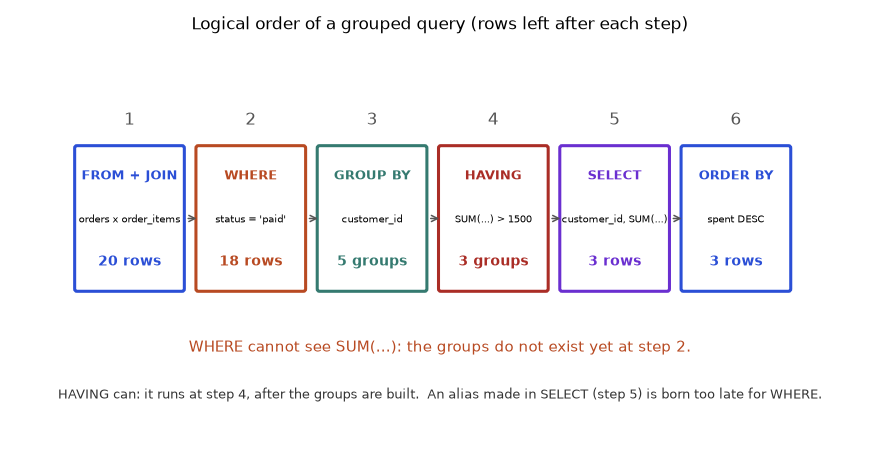
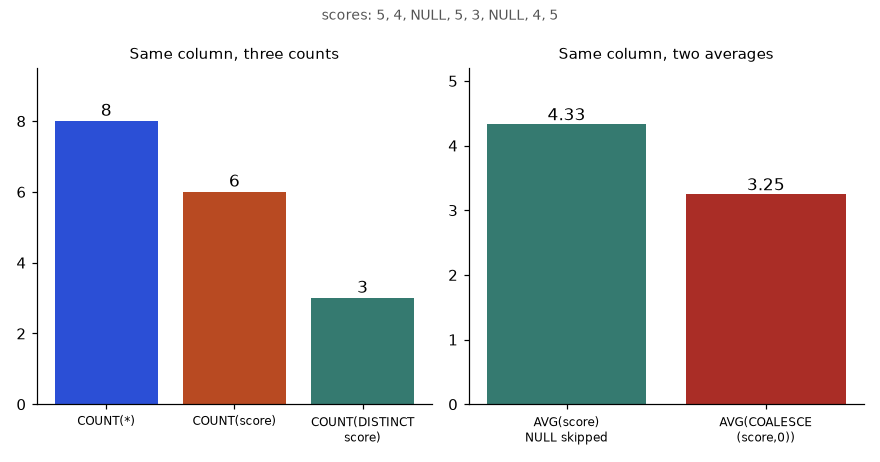
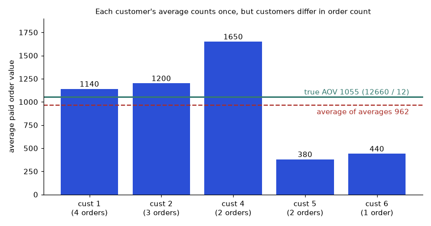
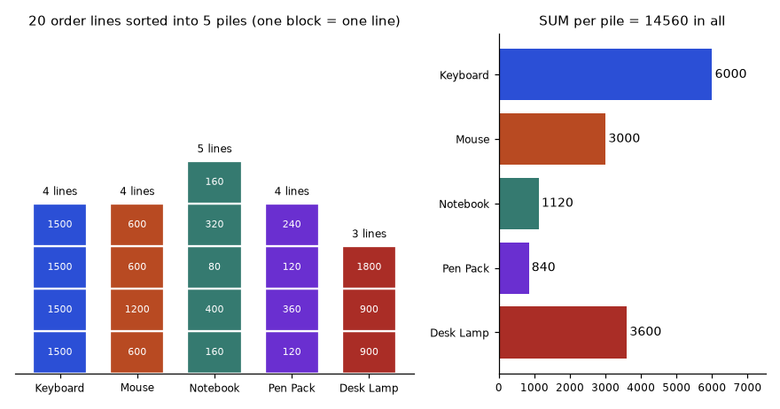
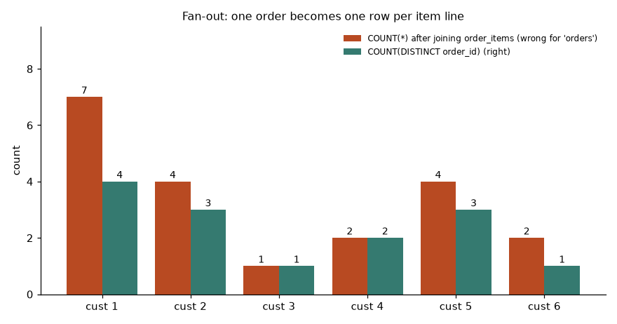
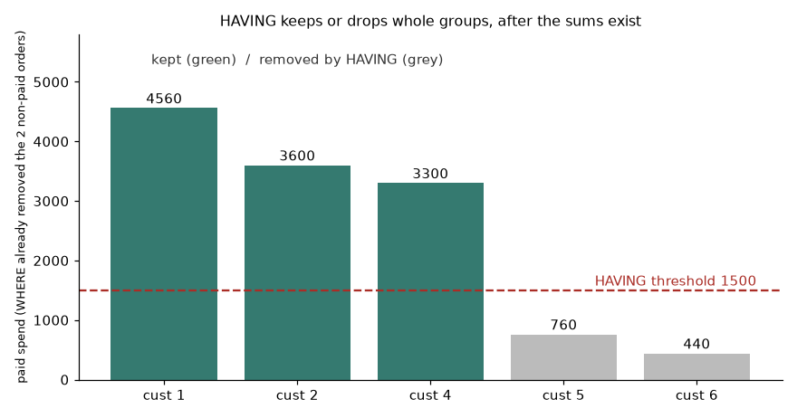
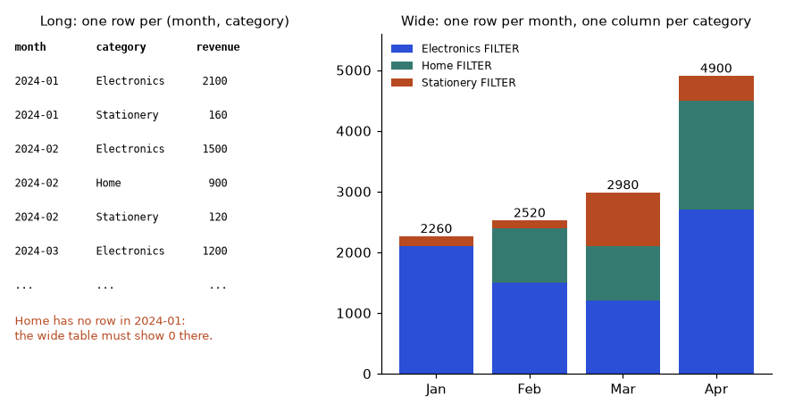
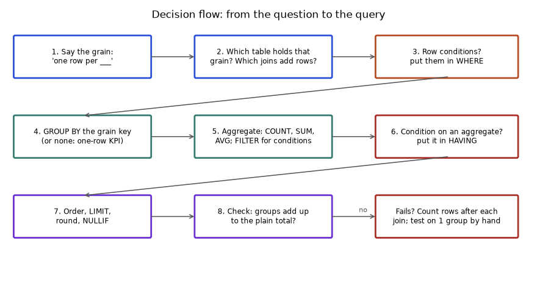

Nobody reads a million rows. Managers ask short questions: "What was revenue last month?", "Which product sells best?", "How many customers ordered more than twice?" Every answer is a summary, and SQL makes summaries with aggregate functions and GROUP BY. By the end of this chapter you can turn the raw order lines of our shop into revenue per product, orders per month, refund rates per customer, and you will know how to check that your summary adds up to the raw total. We reuse the same shop tables all the way, so you only learn the new idea each time.
From now on every example runs on the shop database from section 2.1 (it is loaded for you in each chapter). Quick reminder of the tables: customers, products, orders (with status and coupon), and order_items (with qty and unit_price).
| Function | Returns | NULL handling |
|---|---|---|
COUNT(*) | number of rows | counts every row |
COUNT(col) | number of non-NULL values | skips NULL |
COUNT(DISTINCT col) | number of different non-NULL values | skips NULL |
SUM(col) | total | skips NULL; all NULL gives NULL |
AVG(col) | mean = sum / count of non-NULL | skips NULL |
MIN(col), MAX(col) | smallest, largest (work on text and dates too) | skip NULL |
A query with aggregates and no GROUP BY returns exactly one row, even on an empty table.
Problem 3.1.1 Summarise all order lines: number of lines, total units, and the revenue (sum of qty × unit_price).
| Step 1 | Count rows with COUNT(*). |
|---|---|
| Step 2 | Sum qty. |
| Step 3 | Sum the expression qty * unit_price. |
| Predict | Before you run it: there are 20 order lines. What do you expect for n_lines? (20.) For revenue, add the 14 order totals worked out by hand: 1660, 600, 1020, 400, 1500, 1280, 360, 900, 1500, 440, 600, 1800, 400, 2100. |
SELECT COUNT(*) AS n_lines,
SUM(qty) AS total_units,
SUM(qty * unit_price) AS revenue
FROM order_items;n_lines total_units revenue
------- ----------- -------
20 34 14560revenue. Two independent routes agree.Problem 3.1.2 The AVG trap. (Predict first: will AVG divide by 3 or by 2?) Three payment amounts are 200, 300 and NULL (a payment whose amount was never recorded). What are AVG, the average if NULL counted as 0, and COUNT?
| Step 1 | AVG skips NULL: (200 + 300) / 2 = 250. |
|---|---|
| Step 2 | If NULL were 0: (200 + 300 + 0) / 3 = 166.67. |
CREATE TABLE payments (id INTEGER, amount INTEGER);
INSERT INTO payments VALUES (1,200),(2,300),(3,NULL);
SELECT AVG(amount) AS avg_skip_null,
AVG(COALESCE(amount,0)) AS avg_null_as_zero,
COUNT(*) AS n_rows, COUNT(amount) AS n_values
FROM payments;avg_skip_null avg_null_as_zero n_rows n_values
------------- ---------------- ------ --------
250.0 166.666666666667 3 2(200+300)/2 = 250 and 500/3 = 166.67; both match the output.Problem 3.1.3 Min and max also work on dates and text. What are the first and last signup dates and the alphabetically first and last customer names?
SELECT MIN(signup_date) AS first_signup, MAX(signup_date) AS last_signup,
MIN(name) AS first_name, MAX(name) AS last_name
FROM customers;first_signup last_signup first_name last_name
------------ ----------- ---------- ---------
2024-01-05 2024-04-01 Asha Tom| Aggregate | Example value | Where it appears in the job |
|---|---|---|
COUNT(*) | 20 order lines | shop traffic: number of orders, number of customers |
SUM(qty * unit_price) | 14560 | revenue, total bytes, total cost |
AVG(amount) | 250.0 | average payment amount, average exam mark |
MIN / MAX | first and last signup | oldest record, slowest delivery |
rows aggregate one row
+-----+ SUM(x), COUNT(*)
| 200 | \
| 300 | >----------------------------------> | 500 | 2 |
+-----+ /Every KPI (revenue, active users, error rate) is an aggregate. Percentiles such as p90 and p95, the numbers used in exam and delivery reports, come from window or special aggregate functions: see Chapters 8 and 12.
AVG of integers is a decimal in SQLite, but in some databases (SQL Server) AVG of an integer column is an integer. Cast to decimal when it matters. Also: averaging averages is wrong. If group A has 1 row and group B has 100, the average of their two averages is not the overall average.Check yourself
SUM return if every value is NULL?Answer: NULL.
SELECT COUNT(*) FROM t return on an empty table?Answer: One row, with the value 0.
AVG count NULL rows in the denominator?Answer: No.
GROUP BY is "for each". For each product, total revenue. For each month, number of orders. Sort the rows into piles by a key, then aggregate each pile. Think of a school report: marks grouped by subject.SELECT must be either in GROUP BY or inside an aggregate function. PostgreSQL enforces this. (MySQL used to allow cheating; SQLite allows it too and picks an arbitrary row. Do not rely on it.)NULLs form one group.substr(order_date,1,7) (the year-month text).Problem 3.2.1 Number of orders per status.
| Step 1 | Pile rows by status. |
|---|---|
| Step 2 | Count each pile. |
SELECT status, COUNT(*) AS n_orders
FROM orders
GROUP BY status
ORDER BY n_orders DESC;status n_orders
--------- --------
paid 12
refunded 1
cancelled 1Problem 3.2.2 Revenue and units per product, best first. (We use a JOIN here only to get the product name; Chapter 4 explains it.)
SELECT p.name, SUM(oi.qty) AS units, SUM(oi.qty * oi.unit_price) AS revenue
FROM order_items oi
JOIN products p ON p.product_id = oi.product_id
GROUP BY p.product_id, p.name
ORDER BY revenue DESC;name units revenue
--------- ----- -------
Keyboard 4 6000
Desk Lamp 4 3600
Mouse 5 3000
Notebook 14 1120
Pen Pack 7 8404 × 1500 = 6000. Desk Lamp: 1 + 1 + 2 = 4 units, 4 × 900 = 3600. Mouse: 1 + 2 + 1 + 1 = 5 units, 5 × 600 = 3000. Notebook: 2 + 5 + 1 + 4 + 2 = 14 units, 14 × 80 = 1120. Pen Pack: 1 + 3 + 1 + 2 = 7 units, 7 × 120 = 840.6000 + 3600 + 3000 + 1120 + 840 = 14560, the grand total from 3.1.1.order_items, and an inner join keeps only matches. (This also includes cancelled and refunded orders; Section 3.3 filters those.)Problem 3.2.3 Orders per month (group by an expression) and per month and status (two columns).
SELECT substr(order_date,1,7) AS month, COUNT(*) AS n_orders
FROM orders
GROUP BY substr(order_date,1,7)
ORDER BY month;month n_orders
------- --------
2024-01 2
2024-02 3
2024-03 5
2024-04 4SELECT substr(order_date,1,7) AS month, status, COUNT(*) AS n
FROM orders
GROUP BY month, status
ORDER BY month, status;month status n
------- --------- -
2024-01 paid 2
2024-02 cancelled 1
2024-02 paid 2
2024-03 paid 4
2024-03 refunded 1
2024-04 paid 42 + 3 + 5 + 4 = 14 orders, the full table size.GROUP BY month using the alias; SQL Server does not.)| Grouping key | Example value | Where it appears in the job |
|---|---|---|
status | paid, refunded | order funnel, payment reports |
substr(order_date,1,7) | 2024-03 | monthly revenue and trend lines |
customer_id | 1 | per-user features for ML |
subject | maths, science | per-subject exam summary report |
orders by status GROUP BY status
+-----+-----------+ +-----------+----------+
| 101 | paid | --- pile 1 ---> | paid | COUNT=12 |
| 104 | cancelled | --- pile 2 ---> | cancelled | COUNT=1 |
| 109 | refunded | --- pile 3 ---> | refunded | COUNT=1 |
| ... | | +-----------+----------+Group-by queries are 70 percent of analyst work. The most important question is the grain: after the join and the group by, what does one result row mean? "One row per product per month" is a statement you should be able to write before the query.
column must appear in the GROUP BY clause or be used in an aggregate function. In SQLite it silently returns a random row. Fix the query; do not rely on the quirk.Check yourself
Answer: All NULLs go to one group.
Answer: Yes; you get one group per distinct combination.
product_id and not by name?Answer: The key is unique and stable; names can repeat or change.
WHERE filters rows before piling. HAVING filters piles after counting. "Customers with more than 2 orders" cannot be decided row by row; you need the count first.WHERE runs before GROUP BY and cannot use aggregates. HAVING runs after and can. Prefer WHERE for row conditions (it is faster, since fewer rows enter grouping).
Problem 3.3.1 Customers with at least 3 orders.
| Step 1 | Group orders by customer_id. |
|---|---|
| Step 2 | Keep groups where COUNT(*) >= 3. |
SELECT customer_id, COUNT(*) AS n_orders
FROM orders
GROUP BY customer_id
HAVING COUNT(*) >= 3
ORDER BY n_orders DESC;customer_id n_orders
----------- --------
1 4
5 3
2 3Problem 3.3.2 WHERE and HAVING together: among paid orders only, which customers spent more than 1500? Use order_items joined to orders.
| Step 1 | WHERE o.status = 'paid' removes cancelled and refunded rows first. |
|---|---|
| Step 2 | Group by customer and sum. |
| Step 3 | HAVING keeps sums above 1500. |
SELECT o.customer_id, SUM(oi.qty * oi.unit_price) AS spent
FROM orders o
JOIN order_items oi ON oi.order_id = o.order_id
WHERE o.status = 'paid'
GROUP BY o.customer_id
HAVING SUM(oi.qty * oi.unit_price) > 1500
ORDER BY spent DESC;customer_id spent
----------- -----
1 4560
2 3600
4 33001660 + 1020 + 1280 + 600 = 4560. Customer 2, paid orders 102, 108, 114: 600 + 900 + 2100 = 3600. Customer 4, orders 105 and 112: 1500 + 1800 = 3300. Customer 5, paid orders 107 and 113: 360 + 400 = 760, below 1500, so dropped. (Order 109 is refunded, so WHERE removed it first.)Problem 3.3.3 Where to put the condition: show that filtering on a non-aggregate in HAVING and in WHERE gives the same result, but WHERE is the better place.
SELECT status, COUNT(*) AS n FROM orders GROUP BY status HAVING status = 'paid';status n
------ --
paid 12SELECT status, COUNT(*) AS n FROM orders WHERE status = 'paid' GROUP BY status;status n
------ --
paid 12WHERE for any condition that does not need an aggregate."Customers with more than N orders", "products that sold fewer than 5 units", "endpoints with error rate above 2 percent": all are HAVING. It is like filtering a school report to the subjects whose fail rate exceeds a threshold.
HAVING COUNT(*) > 1), see Chapter 12HAVING in databases that do not allow it (SQL Server, older Oracle). Repeat the expression for portability.Check yourself
Answer: WHERE.
COUNT(*) > 1?Answer: No; use HAVING.
Answer: SELECT email, COUNT(*) FROM t GROUP BY email HAVING COUNT(*) > 1.
FILTER (PostgreSQL, SQLite 3.30+): COUNT(*) FILTER (WHERE status = 'paid').CASE trick (works everywhere): SUM(CASE WHEN status = 'paid' THEN 1 ELSE 0 END).Problem 3.4.1 For each month, the number of all orders, paid orders and non-paid orders in one table.
SELECT substr(order_date,1,7) AS month,
COUNT(*) AS all_orders,
COUNT(*) FILTER (WHERE status = 'paid') AS paid,
COUNT(*) FILTER (WHERE status <> 'paid') AS not_paid
FROM orders
GROUP BY month
ORDER BY month;month all_orders paid not_paid
------- ---------- ---- --------
2024-01 2 2 0
2024-02 3 2 1
2024-03 5 4 1
2024-04 4 4 0paid + not_paid = all_orders (2, 3, 5, 4).Problem 3.4.2 The same with CASE, plus a paid-share percentage. Revenue per month using conditional sums of line totals.
SELECT substr(o.order_date,1,7) AS month,
SUM(CASE WHEN o.status = 'paid' THEN 1 ELSE 0 END) AS paid_lines,
ROUND(100.0 * SUM(CASE WHEN o.status = 'paid' THEN 1 ELSE 0 END) / COUNT(*), 1) AS paid_pct_of_lines,
SUM(oi.qty * oi.unit_price) FILTER (WHERE o.status = 'paid') AS paid_revenue
FROM orders o JOIN order_items oi ON oi.order_id = o.order_id
GROUP BY month
ORDER BY month;month paid_lines paid_pct_of_lines paid_revenue
------- ---------- ----------------- ------------
2024-01 3 100.0 2260
2024-02 3 75.0 2520
2024-03 6 85.7 2980
2024-04 6 100.0 49001660 + 600 = 2260. February 1020 + 1500 = 2520 (order 104 is cancelled). March 1280 + 360 + 900 + 440 = 2980 (order 109 is refunded). April 600 + 1800 + 400 + 2100 = 4900.2260 + 2520 + 2980 + 4900 = 12660, the paid total we found earlier.paid_pct_of_lines is the share of order lines (not orders) that were paid: 100, 75, 85.7 and 100 percent.Problem 3.4.3 Conversion-style rate: the refund rate per customer who has at least one order (refunded orders divided by all orders).
SELECT customer_id,
COUNT(*) AS orders,
COUNT(*) FILTER (WHERE status = 'refunded') AS refunded,
ROUND(1.0 * COUNT(*) FILTER (WHERE status = 'refunded') / COUNT(*), 2) AS refund_rate
FROM orders GROUP BY customer_id ORDER BY refund_rate DESC, customer_id;customer_id orders refunded refund_rate
----------- ------ -------- -----------
5 3 1 0.33
1 4 0 0.0
2 3 0 0.0
3 1 0 0.0
4 2 0 0.0
6 1 0 0.01 / 3 = 0.333, rounded to 0.33. Customer 7 and 8 are missing because they have no orders; a GROUP BY on orders cannot invent rows (Chapter 4 shows how to include them).1/3 = 0.33. Everyone else is 0. customer 5's orders: 107 paid | 109 refunded | 113 paid
COUNT(*) = 3
COUNT(*) FILTER (refunded) = 1 -> rate = 1/3Conditional aggregation is how analysts build "one row per user" feature tables: orders_last_30d, refunds, avg_basket. It is also the base of funnel and retention queries (Chapter 12).
refunded / orders gives 0. Multiply by 1.0 first. And when the denominator can be 0 use NULLIF(orders, 0).Check yourself
FILTER (WHERE ...) do?Answer: It restricts which rows an aggregate sees.
COUNT(*) FILTER (WHERE x>5).Answer: SUM(CASE WHEN x>5 THEN 1 ELSE 0 END).
1.0 * in the rate?Answer: It forces decimal division.
GROUP BY. If she then says 'only show classes with fewer than 30 present', you throw away whole piles after counting. That is HAVING. Every query in this chapter is some mix of sort into piles, collapse each pile to a number, and keep or drop piles.The words below are used all through the chapter. Skim them now and come back whenever a term feels slippery.
| Word | Plain meaning | Example in our shop |
|---|---|---|
| row | one record in a table; one line of the register | order line (order 101, product 3, qty 2) |
| aggregate function | a function that reads many rows and returns one value | SUM(qty), COUNT(*), MAX(price) |
| group (pile) | all rows that share the same value of the grouping key | all rows with status = 'paid' |
| grouping key | the column or expression you sort rows into piles by | customer_id, substr(order_date,1,7) |
| grain | what one row of the result stands for, written as 'one row per ___' | one row per customer per month |
| NULL | 'value unknown or missing', not zero and not an empty string | an order with no coupon |
| predicate | a condition that is true, false or unknown | status = 'paid' |
| conditional aggregate | an aggregate that only reads the rows meeting a condition | COUNT(*) FILTER (WHERE status='refunded') |
| fan-out | a join that repeats one row several times, inflating counts and sums | an order repeated once per item line |
| scalar | a single value (one row, one column) | the number 14560 |
| reconcile | check that parts add up to the whole | per-product revenue adds to 14560 |
FROM and JOIN build the rows, WHERE throws away the ones you do not want.GROUP BY sorts the surviving rows into piles by the key. With no GROUP BY the whole table is one pile.HAVING throws away whole piles, using those values.SELECT produce the output columns, followed by ORDER BY and LIMIT.
How to read it: read left to right. The first box builds 20 order lines. WHERE drops the 2 lines that belong to non-paid orders (order 104 has one line, order 109 has one line), leaving 18. GROUP BY sorts those 18 lines into 5 piles, one per paying customer. HAVING keeps the 3 piles whose sum exceeds 1500. SELECT and ORDER BY only format what is left. The red sentence under the boxes is the key rule of the chapter: a clause can only use things that already exist when it runs.
Problem 3.5.1 Trace the query 'paid spend per customer, only customers above 1500' step by step and write down how many rows or groups remain after each stage. Predict first: the shop has 20 order lines, order 104 (cancelled) has 1 line and order 109 (refunded) has 1 line.
SELECT COUNT(*) AS lines_after_join
FROM orders o JOIN order_items oi ON oi.order_id = o.order_id;lines_after_join
----------------
20SELECT COUNT(*) AS lines_after_where
FROM orders o JOIN order_items oi ON oi.order_id = o.order_id
WHERE o.status = 'paid';lines_after_where
-----------------
18SELECT COUNT(*) AS n_groups FROM (
SELECT o.customer_id
FROM orders o JOIN order_items oi ON oi.order_id = o.order_id
WHERE o.status = 'paid'
GROUP BY o.customer_id);n_groups
--------
5SELECT o.customer_id, SUM(oi.qty * oi.unit_price) AS spent
FROM orders o JOIN order_items oi ON oi.order_id = o.order_id
WHERE o.status = 'paid'
GROUP BY o.customer_id
HAVING SUM(oi.qty * oi.unit_price) > 1500
ORDER BY spent DESC;customer_id spent
----------- -----
1 4560
2 3600
4 3300| Stage 1 | FROM ... JOIN gives one row per order line: 20. |
|---|---|
| Stage 2 | WHERE status = 'paid' removes the lines of order 104 (cancelled) and order 109 (refunded): 20 - 1 - 1 = 18. |
| Stage 3 | GROUP BY customer_id sorts the 18 lines into piles. Customers 1, 2, 4, 5 and 6 have paid lines (customer 3 had only the cancelled order, so there is no pile): 5 groups. |
| Stage 4 | HAVING SUM(...) > 1500 keeps customers 1 (4560), 2 (3600) and 4 (3300). Customer 5 has 760 and customer 6 has 440: 3 groups. |
| Answer | The final output has 3 rows, one per surviving customer, sorted by spent. |
| Check | The counts go 20, 18, 5, 3 and each step can only shrink or keep the count. If a count ever grows after a stage, something multiplied rows. |
Problem 3.5.2 Do GROUP BY by hand on a tiny table before trusting the database. The table marks has 8 rows (4 students times 2 subjects). One mark, Ravi's science mark, is NULL because he was absent. Find the number of rows, the number of real marks, the total, the lowest and the highest mark per subject.
CREATE TABLE marks (student TEXT, subject TEXT, mark INTEGER);
INSERT INTO marks VALUES
('Asha','maths',78),('Asha','science',85),
('Ravi','maths',62),('Ravi','science',NULL),
('Meena','maths',91),('Meena','science',74),
('John','maths',55),('John','science',68);
SELECT * FROM marks;student subject mark
------- ------- ----
Asha maths 78
Asha science 85
Ravi maths 62
Ravi science NULL
Meena maths 91
Meena science 74
John maths 55
John science 68SELECT subject, COUNT(*) AS n_rows, COUNT(mark) AS n_marks, SUM(mark) AS total,
MIN(mark) AS lowest, MAX(mark) AS highest
FROM marks
GROUP BY subject;subject n_rows n_marks total lowest highest
------- ------ ------- ----- ------ -------
maths 4 4 286 55 91
science 4 3 227 68 85| Step 1 | Make two piles by the key subject. Maths pile: 78, 62, 91, 55. Science pile: 85, NULL, 74, 68. |
|---|---|
| Step 2 (maths) | 4 rows and 4 real marks. Sum: 78 + 62 + 91 + 55 = 286. Lowest 55, highest 91. |
| Step 3 (science) | 4 rows but only 3 real marks (85, 74, 68). The NULL is skipped by COUNT(mark), SUM, MIN and MAX. Sum: 85 + 74 + 68 = 227. Lowest 68, highest 85. |
| Check | The printed table matches both hand piles. COUNT(*) counted the absent student, COUNT(mark) did not. |
| Meaning | Two different questions hide here: 'how many students were enrolled' (4) and 'how many marks were recorded' (3). Pick the function that matches the question. |
Problem 3.5.3 A teammate writes WHERE COUNT(*) > 2 to find customers with more than two orders. What does the database say, and why?
SELECT customer_id, COUNT(*) FROM orders WHERE COUNT(*) > 2 GROUP BY customer_id;Error: misuse of aggregate: COUNT()| Step 1 | Follow the pipeline. WHERE is stage 2, applied to one row at a time. |
|---|---|
| Step 2 | At that moment no pile exists, so there is no COUNT(*) for a customer yet. |
| Step 3 | The database refuses: an aggregate is not allowed where only single rows are visible. |
| Fix | Move the test to HAVING COUNT(*) > 2, which runs at stage 4, after the piles exist. |
| Answer | The error is a pipeline-order error, not a typing error. When you see 'misuse of aggregate', ask: which stage am I in? |
WHERE. Wrong: WHERE COUNT(*) > 2 (error: misuse of aggregate). Right: GROUP BY customer_id HAVING COUNT(*) > 2. The reverse mistake also exists: using HAVING status = 'paid' for a plain row condition. It works, but it makes the database build piles for every status first and then discard them. Put row conditions in WHERE.Check yourself. (1) In which stage is a column alias from SELECT created? Answer: stage 5, after HAVING, which is why strict databases refuse the alias earlier. (2) With no GROUP BY, how many piles are there? Answer: one, the whole table. (3) What is the grain of Problem 3.5.2's result? Answer: one row per subject.
Section 3.1 listed the functions. Here you learn to choose the right one, to predict the answer with NULL and empty tables in play, and to avoid the five silent errors that produce a believable but wrong number. We climb a ladder: counting first, then sums and averages, then min and max, then joining text together.
COUNT(*) asks 'how many rows?'. COUNT(col) asks 'in how many rows is col filled in?'. COUNT(DISTINCT col) asks 'how many different filled-in values?'. They only agree when the column has no NULLs and no repeats.Problem 3.6.1 (trivial) Eight reviewers gave a score from 1 to 5, but two skipped the question (NULL). Find the number of rows, the number of answers, the number of different scores, the sum, and two averages. Predict first: scores are 5, 4, NULL, 5, 3, NULL, 4, 5.
CREATE TABLE reviews (reviewer TEXT, score INTEGER);
INSERT INTO reviews VALUES ('A',5),('B',4),('C',NULL),('D',5),('E',3),('F',NULL),('G',4),('H',5);
SELECT COUNT(*) AS all_rows,
COUNT(score) AS answered,
COUNT(DISTINCT score) AS different_scores,
SUM(score) AS total,
AVG(score) AS avg_skip_null,
AVG(COALESCE(score,0)) AS avg_null_as_zero
FROM reviews;all_rows answered different_scores total avg_skip_null avg_null_as_zero
-------- -------- ---------------- ----- ----------------- ----------------
8 6 3 26 4.333333333333333 3.25
How to read it: on the left the same column gives 8, 6 and 3 depending on the function: eight rows, six answers, three different values (3, 4 and 5). On the right the average is 4.33 if the two blanks mean 'no answer' and 3.25 if they mean 'zero points'. Neither is a database bug; they answer different questions, and you must decide which question is yours.
| Step 1 | COUNT(*) counts rows: 8. |
|---|---|
| Step 2 | COUNT(score) skips the 2 NULLs: 6. |
| Step 3 | COUNT(DISTINCT score): the values 5, 4, 3 are the only different ones: 3. |
| Step 4 | SUM(score) skips NULL: 5 + 4 + 5 + 3 + 4 + 5 = 26. |
| Step 5 | AVG(score) divides by the 6 real answers: 26 / 6 = 4.3333. |
| Step 6 | With COALESCE(score,0) the NULLs become 0 and the divisor is 8: 26 / 8 = 3.25. |
| Answer | 6 answers, 4.33 average among those who answered, 3.25 if non-answers count as zero. |
| Meaning | 'Average satisfaction of people who responded' is 4.33. A manager who reads 3.25 would think customers are unhappier than they are. |
Problem 3.6.2 (easy) On the orders table, how many orders have a coupon, how many different coupon codes exist, how many different statuses, and how many different customers placed orders?
SELECT COUNT(*) AS all_orders,
COUNT(coupon) AS with_coupon,
COUNT(DISTINCT coupon) AS kinds_of_coupon,
COUNT(DISTINCT status) AS kinds_of_status,
COUNT(DISTINCT customer_id) AS buyers
FROM orders;all_orders with_coupon kinds_of_coupon kinds_of_status buyers
---------- ----------- --------------- --------------- ------
14 3 1 3 6| Step 1 | COUNT(*) = 14 orders, the table size. |
|---|---|
| Step 2 | COUNT(coupon) counts only non-NULL coupons: the 3 orders 102, 105 and 110. |
| Step 3 | COUNT(DISTINCT coupon): all three used the same code SAVE10, so 1 kind. |
| Step 4 | Statuses are paid, cancelled and refunded: 3 kinds. Customers who ever ordered: 1, 2, 3, 4, 5, 6: 6 buyers. |
| Check | The number of orders without a coupon is COUNT(*) - COUNT(coupon) = 14 - 3 = 11, matching Problem 3.P.7. |
Problem 3.6.3 (realistic) For each product category, how many order lines, how many different orders and how many different customers? Here each number has a different grain, so each needs its own function. Predict: Electronics is bought in many orders, but a customer may buy two electronics items in the same order.
SELECT p.category,
COUNT(*) AS lines,
COUNT(DISTINCT oi.order_id) AS orders,
COUNT(DISTINCT o.customer_id) AS buyers
FROM order_items oi
JOIN products p ON p.product_id = oi.product_id
JOIN orders o ON o.order_id = oi.order_id
GROUP BY p.category
ORDER BY p.category;category lines orders buyers
----------- ----- ------ ------
Electronics 8 7 4
Home 3 3 3
Stationery 9 7 4| Step 1 | Join items to products (for the category) and to orders (for the customer). Now one row is one order line. |
|---|---|
| Step 2 | COUNT(*) counts lines. COUNT(DISTINCT oi.order_id) counts each order once even if it has two lines of that category. COUNT(DISTINCT o.customer_id) counts each person once. |
| Step 3 | Read the Electronics row: 8 lines in 7 orders bought by 4 customers (1, 2, 4 and 5). Order 114 contains both a Keyboard and a Mouse, so it contributes 2 lines but 1 order. |
| Step 4 | Stationery has 9 lines in 7 orders bought by customers 1, 3, 5 and 6. Orders 110 and 113 each contain two stationery products, so lines exceed orders by 2. |
| Check | Lines add up to 8 + 3 + 9 = 20, the number of order lines. Orders do not add up to 14 across categories (7 + 3 + 7 = 17), because an order with items from two categories is counted once in each. |
| Meaning | 'How many customers buy Stationery?' needs COUNT(DISTINCT customer_id). Using COUNT(*) here would overstate the audience (9 instead of 4). |
Look closely at the output above: the lines, orders and buyers columns are different numbers for the same category. Whenever a number must describe a thing (customers, orders), count that thing's key with DISTINCT after a join, or aggregate before joining (Section 3.7).
Two special cases surprise people: what SUM returns for no rows at all, and what happens when two integers are divided.
Problem 3.6.4 (medium) What do the aggregates return when no row passes the WHERE (here: no order line has more than 1000 units)? Predict first: how many rows does the result have?
SELECT COUNT(*) AS n, SUM(qty) AS total_qty, AVG(qty) AS avg_qty,
MAX(qty) AS max_qty, COALESCE(SUM(qty), 0) AS total_or_zero
FROM order_items
WHERE qty > 1000;n total_qty avg_qty max_qty total_or_zero
- --------- ------- ------- -------------
0 NULL NULL NULL 0SELECT SUM(qty) AS sum_empty, TOTAL(qty) AS total_empty
FROM order_items WHERE qty > 1000;sum_empty total_empty
--------- -----------
NULL 0.0| Step 1 | An aggregate query without GROUP BY always returns exactly one row, even when the input is empty. |
|---|---|
| Step 2 | COUNT of nothing is 0, because zero is a perfectly good count. |
| Step 3 | SUM, AVG, MAX of nothing have no sensible number, so SQL returns NULL. |
| Step 4 | COALESCE(SUM(qty), 0) converts that NULL to 0 when a report needs a number. SQLite's own TOTAL() does the same but returns a decimal (0.0). |
| Answer | One row: n = 0, the rest NULL (or 0 where you coalesced). |
| Meaning | A dashboard card that shows 'revenue: NULL' on a quiet day is a bug waiting to be reported. Decide whether empty means 0 or 'no data'. |
Problem 3.6.5 (medium) Integer division. Compute 7 / 2 four ways, then the average units per order line from SUM(qty) / COUNT(*) and from AVG(qty).
SELECT 7 / 2 AS int_div,
7 / 2.0 AS dec_div,
1.0 * 7 / 2 AS forced_dec,
CAST(7 AS REAL) / 2 AS cast_dec;int_div dec_div forced_dec cast_dec
------- ------- ---------- --------
3 3.5 3.5 3.5SELECT SUM(qty) AS units,
COUNT(*) AS n_lines,
SUM(qty) / COUNT(*) AS wrong_int,
1.0 * SUM(qty) / COUNT(*) AS right_dec,
AVG(qty) AS avg_builtin
FROM order_items;units n_lines wrong_int right_dec avg_builtin
----- ------- --------- --------- -----------
34 20 1 1.7 1.7| Step 1 | Two integers divided with / in SQLite (and in SQL Server, and in PostgreSQL) give an integer: 7 / 2 = 3. |
|---|---|
| Step 2 | Make either side a decimal and you get 3.5: write 7 / 2.0, 1.0 * 7 / 2 or CAST(7 AS REAL) / 2. |
| Step 3 | Total units 34 divided by 20 lines: 34 / 20 as integers is 1 (the 0.7 is thrown away), but the right answer is 1.7. |
| Step 4 | AVG(qty) already works in decimals in SQLite and gives 1.7. |
| Answer | Average units per line is 1.7. |
| Check | 20 x 1.7 = 34, the total units. Always multiply the average back by the count to see if you get the total. |
SUM(qty) / COUNT(*) returns 1 here, not 1.7. MySQL's / always returns a decimal, but PostgreSQL, SQL Server and SQLite truncate integer division, so a query that looks fine on one engine is wrong on another. Habit: write 1.0 * SUM(x) / COUNT(*) or use AVG(x).Problem 3.6.6 (medium) The DISTINCT trap. What is the total of unit_price over all order lines, and what does SUM(DISTINCT unit_price) return? Which one is revenue-relevant?
SELECT SUM(unit_price) AS sum_all,
SUM(DISTINCT unit_price) AS sum_distinct,
COUNT(DISTINCT unit_price) AS different_prices
FROM order_items;sum_all sum_distinct different_prices
------- ------------ ----------------
11980 3200 5| Step 1 | SUM(unit_price) adds the price on all 20 lines: 11980. (It is not revenue, since it ignores quantity; it is only a demonstration.) |
|---|---|
| Step 2 | SUM(DISTINCT unit_price) first removes repeated prices, leaving 1500, 600, 80, 120, 900, then adds them: 3200. |
| Step 3 | Five different prices, so COUNT(DISTINCT unit_price) is 5. |
| Answer | 11980 versus 3200. |
| Meaning | Two different lines selling a 600 mouse are two real sales. SUM(DISTINCT amount) counts only one of them and silently under-reports revenue. |
SUM(DISTINCT amount) to 'fix' double counting after a join. It removes real sales that merely have the same amount. The safe fixes are to aggregate before joining (Section 3.7) or to sum a per-row key-safe value. DISTINCT belongs with COUNT of an identifier, almost never with SUM.An average is a sum divided by a count. If you average two averages you give a group of 1 order the same voice as a group of 100. The correct recipe: add all numerators, add all denominators, divide once.
Problem 3.6.7 (realistic) For paid orders compute each customer's average order value, then the plain mean of those averages, and the true average order value (AOV) across all 12 paid orders.
SELECT o.customer_id,
COUNT(DISTINCT o.order_id) AS n_orders,
SUM(oi.qty * oi.unit_price) AS spent,
ROUND(1.0 * SUM(oi.qty * oi.unit_price) / COUNT(DISTINCT o.order_id), 1) AS aov
FROM orders o JOIN order_items oi ON oi.order_id = o.order_id
WHERE o.status = 'paid'
GROUP BY o.customer_id
ORDER BY o.customer_id;customer_id n_orders spent aov
----------- -------- ----- ------
1 4 4560 1140.0
2 3 3600 1200.0
4 2 3300 1650.0
5 2 760 380.0
6 1 440 440.0SELECT ROUND(AVG(aov), 1) AS avg_of_averages
FROM (SELECT o.customer_id, 1.0 * SUM(oi.qty * oi.unit_price) / COUNT(DISTINCT o.order_id) AS aov
FROM orders o JOIN order_items oi ON oi.order_id = o.order_id
WHERE o.status = 'paid'
GROUP BY o.customer_id);avg_of_averages
---------------
962.0SELECT ROUND(1.0 * SUM(oi.qty * oi.unit_price) / COUNT(DISTINCT o.order_id), 1) AS true_aov
FROM orders o JOIN order_items oi ON oi.order_id = o.order_id
WHERE o.status = 'paid';true_aov
--------
1055.0
How to read it: each bar is one customer's own average order value. Customer 4 (two orders) and customer 6 (one order) pull the plain mean of the five bars down to 962, because each customer counts once. The true AOV is 1055 because customer 1 placed four orders and customer 2 three, so their high averages carry more weight in the real total of 12 orders.
| Step 1 | Per customer: 4560 / 4 = 1140, 3600 / 3 = 1200, 3300 / 2 = 1650, 760 / 2 = 380, 440 / 1 = 440. |
|---|---|
| Step 2 | Average of those five: (1140 + 1200 + 1650 + 380 + 440) / 5 = 4810 / 5 = 962. |
| Step 3 | True AOV: total paid revenue 12660 divided by total paid orders 12 = 1055. |
| Answer | 962 (wrong) versus 1055 (right) for 'average order value'. |
| Check | 12 x 1055 = 12660, the real revenue. 12 x 962 = 11544 does not match the revenue, so 962 cannot be the AOV. |
| Rule | Never average averages unless every group has the same size. Carry the sum and the count up and divide once. |
Problem 3.6.8 (easy) For each product, the smallest and largest quantity ever bought in one line, and the spread (max minus min).
SELECT product_id,
MIN(qty) AS min_qty, MAX(qty) AS max_qty,
MAX(qty) - MIN(qty) AS spread
FROM order_items
GROUP BY product_id
ORDER BY product_id;product_id min_qty max_qty spread
---------- ------- ------- ------
1 1 1 0
2 1 2 1
3 1 5 4
4 1 3 2
5 1 2 1| Step 1 | Pile order lines by product. |
|---|---|
| Step 2 | Keyboard (product 1) was always bought one at a time: min = max = 1, spread 0. |
| Step 3 | Notebook (product 3) ranges from 1 to 5: spread 4. That product has the most variable order size. |
| Answer | The table above; the notebook has the largest spread (4). |
Problem 3.6.9 (medium) MIN and MAX also work on dates and text. Find the first and last order date, the alphabetically first and last status, and the minimum coupon. Predict the coupon: only 3 orders have one.
SELECT MIN(order_date) AS first_order, MAX(order_date) AS last_order,
MIN(status) AS first_status, MAX(status) AS last_status,
MIN(coupon) AS min_coupon
FROM orders;first_order last_order first_status last_status min_coupon
----------- ---------- ------------ ----------- ----------
2024-01-10 2024-04-20 cancelled refunded SAVE10| Step 1 | ISO dates (YYYY-MM-DD) sort the same way as time, so MIN and MAX give the earliest and latest date: 2024-01-10 and 2024-04-20. |
|---|---|
| Step 2 | Text compares letter by letter: cancelled < paid < refunded. |
| Step 3 | MIN(coupon) ignores the 11 NULL coupons and returns SAVE10. |
| Answer | Dates 2024-01-10 to 2024-04-20, statuses cancelled and refunded, coupon SAVE10. |
| Meaning | Dates stored as text work only if they are always in the same sortable format. 'DD-MM-YYYY' text would give nonsense. |
Sometimes the pile should become a list, not a number: 'which customers live in each city'. Every database has a function, with a different name.
| Database | Function | Example |
|---|---|---|
| SQLite, MySQL | group_concat(x, ', ') | group_concat(name, ', ') |
| PostgreSQL, SQL Server 2017+ | string_agg(x, ', ') | string_agg(name, ', ' ORDER BY name) |
| Oracle | LISTAGG(x, ', ') | LISTAGG(name, ', ') WITHIN GROUP (ORDER BY name) |
| BigQuery, Snowflake | STRING_AGG / LISTAGG | check the dialect page in Chapter 14 |
Problem 3.6.10 (medium) List the customers living in each city in one cell, with a count. Predict: Pune has three customers.
SELECT city,
COUNT(*) AS n,
group_concat(name, ', ') AS customers
FROM customers
GROUP BY city
ORDER BY city;city n customers
--------- - ----------------
Bengaluru 1 Priya
Delhi 2 John, Sana
Mumbai 2 Ravi, Kabir
Pune 3 Asha, Meena, Tom| Step 1 | GROUP BY city makes four piles. |
|---|---|
| Step 2 | group_concat(name, ', ') glues the names of one pile with a comma and space. |
| Step 3 | COUNT(*) counts the pile: Pune 3 (Asha, Meena, Tom), Delhi 2, Mumbai 2, Bengaluru 1. |
| Answer | The table above. |
| Caution | The order of names inside the cell is not guaranteed in SQLite. PostgreSQL lets you write string_agg(name, ', ' ORDER BY name). Never rely on an unordered list in a report. |
COUNT(*)), filled values (COUNT(col)), distinct things (COUNT(DISTINCT id)), total (SUM), typical value among non-NULL (AVG), extremes (MIN/MAX), list (group_concat/string_agg).GROUP BY as a sorting machine with labelled bins. You choose the label (the key). Every row drops into the bin with its label. The result has exactly one row per bin that received at least one row. So the first thing to decide is never 'which function' but 'what is one row of my answer'. That sentence is the grain.
How to read it: each coloured block is one order line and its number is qty * unit_price. GROUP BY product_id builds the five stacks (Keyboard 4 lines, Mouse 4, Notebook 5, Pen Pack 4, Desk Lamp 3). SUM adds the numbers inside each stack and the bars show the result. Every block lands in exactly one stack, which is why the five bars always add up to the ungrouped total 14560.
Problem 3.7.1 (easy) How many orders has each customer placed, including customers who never ordered? Show what happens with COUNT(*) versus COUNT(o.order_id) after a LEFT JOIN. Predict: Sana (7) and Tom (8) have no orders.
SELECT c.customer_id, c.name,
COUNT(*) AS wrong_count_star,
COUNT(o.order_id) AS right_n_orders
FROM customers c
LEFT JOIN orders o ON o.customer_id = c.customer_id
GROUP BY c.customer_id, c.name
ORDER BY c.customer_id;customer_id name wrong_count_star right_n_orders
----------- ----- ---------------- --------------
1 Asha 4 4
2 Ravi 3 3
3 Meena 1 1
4 John 2 2
5 Priya 3 3
6 Kabir 1 1
7 Sana 1 0
8 Tom 1 0| Step 1 | LEFT JOIN keeps every customer. A customer with no order gets one joined row with NULL in all order columns. |
|---|---|
| Step 2 | COUNT(*) counts that placeholder row, so Sana and Tom show 1 instead of 0. |
| Step 3 | COUNT(o.order_id) counts only non-NULL order ids, so the placeholder adds nothing: Sana and Tom show 0. |
| Answer | Asha 4, Ravi 3, Meena 1, John 2, Priya 3, Kabir 1, Sana 0, Tom 0. |
| Check | 4 + 3 + 1 + 2 + 3 + 1 + 0 + 0 = 14, the number of orders. |
COUNT(*) after a LEFT JOIN. The unmatched customer still produces one row, so you report 1 order instead of 0. Count a column from the right-hand table (COUNT(o.order_id)) when you want 'how many matches'. Chapter 4 covers LEFT JOIN in full.Each extra key makes the bins finer. The number of result rows is at most the product of the number of distinct values of each key, and usually far smaller because many combinations never occur.
Problem 3.7.2 (medium) Paid revenue by month and by category. Predict: 4 months and 3 categories could give 12 rows, but January has no Home sale.
SELECT substr(o.order_date,1,7) AS month, p.category,
SUM(oi.qty * oi.unit_price) AS paid_revenue
FROM orders o
JOIN order_items oi ON oi.order_id = o.order_id
JOIN products p ON p.product_id = oi.product_id
WHERE o.status = 'paid'
GROUP BY month, p.category
ORDER BY month, p.category;month category paid_revenue
------- ----------- ------------
2024-01 Electronics 2100
2024-01 Stationery 160
2024-02 Electronics 1500
2024-02 Home 900
2024-02 Stationery 120
2024-03 Electronics 1200
2024-03 Home 900
2024-03 Stationery 880
2024-04 Electronics 2700
2024-04 Home 1800
2024-04 Stationery 400| Step 1 | Grain: one row per (month, category). Join three tables to get the month (orders), the category (products) and the line total (order_items). |
|---|---|
| Step 2 | WHERE o.status = 'paid' removes orders 104 and 109 first. |
| Step 3 | GROUP BY month, p.category: a pile for every pair that occurs. |
| Step 4 | Count the rows: Jan 2, Feb 3, Mar 3, Apr 3 = 11, not 12, because Home has no sale in January. |
| Check | The 11 sums add to 12660: 2100 + 160 + 1500 + 900 + 120 + 1200 + 900 + 880 + 2700 + 1800 + 400 = 12660. |
| Meaning | A missing row is not a zero. To draw a chart you need a row of 0 for (2024-01, Home); that takes a calendar-style grid joined with LEFT JOIN. Section 3.9 shows the pivot alternative. |
The same grouping can be written with a column name, an expression, an alias or a position number. They produce the same piles.
SELECT status, COUNT(*) AS n FROM orders GROUP BY status ORDER BY status;status n
--------- --
cancelled 1
paid 12
refunded 1SELECT status, COUNT(*) AS n FROM orders GROUP BY 1 ORDER BY 1;status n
--------- --
cancelled 1
paid 12
refunded 1| Style | Example | Works in |
|---|---|---|
| column name | GROUP BY status | everywhere |
| expression | GROUP BY substr(order_date,1,7) | everywhere (repeat the expression in SELECT) |
| alias of a SELECT item | GROUP BY month | SQLite, MySQL, PostgreSQL; not SQL Server, not older Oracle |
| position number | GROUP BY 1 | SQLite, MySQL, PostgreSQL, others; fine for quick work, fragile when you edit the column list |
Rule for production code: group by the real expression or column, and give the key a clear alias in SELECT. In daily exploration GROUP BY 1, 2 is a harmless time-saver.
Problem 3.7.3 (medium) Orders per coupon, with the number paid. Predict: coupons are SAVE10 on three orders and NULL on eleven.
SELECT COALESCE(coupon, '(none)') AS coupon_used,
COUNT(*) AS n_orders,
COUNT(*) FILTER (WHERE status = 'paid') AS n_paid
FROM orders
GROUP BY coupon
ORDER BY n_orders DESC;coupon_used n_orders n_paid
----------- -------- ------
(none) 11 9
SAVE10 3 3| Step 1 | In GROUP BY, all NULLs are treated as equal, so the 11 orders without a coupon form one bin. (Compare with WHERE coupon = NULL, which is never true. Grouping uses 'same bucket', not 'equal'.) |
|---|---|
| Step 2 | COALESCE(coupon, '(none)') in SELECT is only a readable label for the NULL bin. It is allowed because it is built from the grouped column alone. |
| Step 3 | FILTER (WHERE status = 'paid') counts the paid ones inside each bin: the 11 orders without a coupon include 1 cancelled and 1 refunded, so 9 paid; the 3 coupon orders are all paid. |
| Check | 11 + 3 = 14 orders; 9 + 3 = 12 paid, matching the 12 paid orders overall. |
Only the group keys, aggregates, constants, and expressions built from those. A plain column that is neither is ambiguous: a pile has many values of it, and the database must pick one. PostgreSQL, SQL Server and Oracle refuse such a query. SQLite and (old) MySQL accept it and pick a value from some row of the pile.
Problem 3.7.4 (medium) What does SQLite return for SELECT category, name, COUNT(*) ... GROUP BY category? Then the same with MAX(price). Predict whether the name is meaningful.
SELECT category, name, COUNT(*) AS n
FROM products
GROUP BY category
ORDER BY category;category name n
----------- --------- -
Electronics Keyboard 2
Home Desk Lamp 2
Stationery Notebook 2SELECT category, MAX(price) AS top_price, name
FROM products
GROUP BY category
ORDER BY category;category top_price name
----------- --------- ---------
Electronics 1500 Keyboard
Home 900 Desk Lamp
Stationery 120 Pen Pack| Step 1 | In the first query name is not grouped, not aggregated. SQLite returns the name from an arbitrary row of each pile (Keyboard, Desk Lamp, Notebook here). Another SQLite version or a different table order could return another name. |
|---|---|
| Step 2 | In the second query there is a single MAX or MIN. SQLite has a special documented rule: the bare column comes from the row that holds the max. So Keyboard (1500) and Desk Lamp (900) are correct; Pen Pack (120) is the dearest stationery item. |
| Step 3 | PostgreSQL rejects both: column products.name must appear in the GROUP BY clause or be used in an aggregate function. |
| Answer | Never rely on the SQLite rule in code that must be portable. Use a window function (Chapter 8) or a join back to the max, shown in Pattern 5 of Section 3.10. |
SELECT DISTINCT status FROM orders ORDER BY status;status
---------
cancelled
paid
refundedThat is the same answer as SELECT status FROM orders GROUP BY status. Use DISTINCT when you only need the unique values, and GROUP BY when you also need aggregates. And remember the order of result rows is not promised by either: add ORDER BY whenever the order matters.
Problem 3.7.5 (medium) For each customer, count the rows after joining customers, orders and order items, and compare with the true number of orders. Predict for Asha: 4 orders but 7 item lines.
SELECT c.customer_id,
COUNT(*) AS rows_after_join,
COUNT(DISTINCT o.order_id) AS real_orders
FROM customers c
JOIN orders o ON o.customer_id = c.customer_id
JOIN order_items oi ON oi.order_id = o.order_id
GROUP BY c.customer_id
ORDER BY c.customer_id;customer_id rows_after_join real_orders
----------- --------------- -----------
1 7 4
2 4 3
3 1 1
4 2 2
5 4 3
6 2 1
How to read it: the orange bar is what COUNT(*) reports after joining to order_items; the teal bar is the true number of orders. They match only for customers whose every order has exactly one item line (customers 3 and 4). Customer 1 shows 7 against 4 because three of its four orders have two item lines each (2 + 2 + 2 + 1 = 7). See the steps below.
| Step 1 | Grain after the join: one row per order line, not per order. Customer 1 has orders 101 (2 lines), 103 (2 lines), 106 (2 lines) and 111 (1 line): 2 + 2 + 2 + 1 = 7 rows. |
|---|---|
| Step 2 | COUNT(DISTINCT o.order_id) collapses repeats of the order id: 4. That is the right 'number of orders'. |
| Step 3 | Customer 3 has one order with one line, so both numbers are 1; customer 5 has orders 107 (1 line), 109 (1 line), 113 (2 lines): 4 rows, 3 orders. |
| Answer | Use COUNT(DISTINCT order_id) for orders and COUNT(*) only for lines. |
| Check | Total real orders: 4 + 3 + 1 + 2 + 3 + 1 = 14. Total rows: 7 + 4 + 1 + 2 + 4 + 2 = 20, the number of lines. |
The cleaner cure: aggregate to the right grain first, then join. Below, a temporary named result order_totals (a CTE, taught in Chapter 5; read it as 'a named mini-table') first collapses lines to one row per order. Joining that to customers cannot multiply anything, because each order now appears once.
Problem 3.7.6 (realistic) Paid orders, revenue and average order value per city. First the correct way, then the broken way, and compare the order counts.
WITH order_totals AS (
SELECT order_id, SUM(qty * unit_price) AS total
FROM order_items
GROUP BY order_id
)
SELECT c.city,
COUNT(*) AS paid_orders,
SUM(t.total) AS paid_revenue,
ROUND(1.0 * SUM(t.total) / COUNT(*), 1) AS aov
FROM customers c
JOIN orders o ON o.customer_id = c.customer_id
JOIN order_totals t ON t.order_id = o.order_id
WHERE o.status = 'paid'
GROUP BY c.city
ORDER BY c.city;city paid_orders paid_revenue aov
--------- ----------- ------------ ------
Bengaluru 2 760 380.0
Delhi 2 3300 1650.0
Mumbai 4 4040 1010.0
Pune 4 4560 1140.0SELECT c.city,
COUNT(*) AS wrong_orders,
SUM(oi.qty * oi.unit_price) AS revenue_ok_but_count_wrong
FROM customers c
JOIN orders o ON o.customer_id = c.customer_id
JOIN order_items oi ON oi.order_id = o.order_id
WHERE o.status = 'paid'
GROUP BY c.city
ORDER BY c.city;city wrong_orders revenue_ok_but_count_wrong
--------- ------------ --------------------------
Bengaluru 3 760
Delhi 2 3300
Mumbai 6 4040
Pune 7 4560| Step 1 | order_totals has 14 rows, one per order. Joining it keeps the grain at order level, so COUNT(*) really counts orders: Bengaluru 2, Delhi 2, Mumbai 4, Pune 4. Total 12 paid orders. |
|---|---|
| Step 2 | Revenue per city is the sum of order totals: Bengaluru 760, Delhi 3300, Mumbai 4040, Pune 4560. Total 12660. |
| Step 3 | AOV = revenue / orders: Bengaluru 380.0, Delhi 1650.0, Mumbai 1010.0, Pune 1140.0. |
| Step 4 | In the broken query the revenue column is still right (sum of line totals does not double count), but COUNT(*) counts lines: Bengaluru 3 instead of 2, Mumbai 6 instead of 4, Pune 7 instead of 4 (Delhi happens to be unaffected, which is how such bugs hide). Dividing the correct revenue by these wrong counts would give wrong AOVs. |
| Check | The correct order counts add to 2 + 2 + 4 + 4 = 12 paid orders. The broken counts add to 3 + 2 + 6 + 7 = 18, which is the number of paid lines, not orders. |
| Lesson | The same query can be right for one column and wrong for another. Check every column against a number you can compute independently. |
COUNT(DISTINCT id); do not join the detail table at all (use EXISTS, Chapter 5).Check yourself. (1) Which rows form the NULL group? Answer: all rows whose key is NULL, together. (2) A query groups by customer_id and selects name. Safe in PostgreSQL? Answer: no, unless name is also grouped, or customer_id is the table's primary key (PostgreSQL then allows it). (3) What does GROUP BY guarantee about row order? Answer: nothing.
HAVING is a WHERE for piles. Section 3.3 showed the basics. Here are the shapes you will meet in real work: several conditions, a condition on an aggregate you do not display, a condition on the whole table, a condition that compares a group with all groups, and the 'all rows in the pile satisfy X' pattern.

How to read it: each bar is one customer pile after WHERE status = 'paid' and SUM. The dashed line is the HAVING threshold. A group is kept or dropped as a whole; HAVING never removes single rows from a kept group.
Problem 3.8.1 (easy) Customers who placed at least 2 paid orders and spent more than 1000 on them. Predict: customer 6 has one paid order of 440; customer 5 has two paid orders but only 760.
SELECT o.customer_id,
COUNT(DISTINCT o.order_id) AS paid_orders,
SUM(oi.qty * oi.unit_price) AS spent
FROM orders o JOIN order_items oi ON oi.order_id = o.order_id
WHERE o.status = 'paid'
GROUP BY o.customer_id
HAVING COUNT(DISTINCT o.order_id) >= 2
AND SUM(oi.qty * oi.unit_price) > 1000
ORDER BY spent DESC;customer_id paid_orders spent
----------- ----------- -----
1 4 4560
2 3 3600
4 2 3300| Step 1 | WHERE keeps paid lines. |
|---|---|
| Step 2 | Group by customer. Per group compute the number of different orders and the total. |
| Step 3 | HAVING with AND keeps groups meeting both: customer 1 (4 orders, 4560), 2 (3 orders, 3600) and 4 (2 orders, 3300). |
| Step 4 | Customer 5 fails the money test (760), customer 6 fails both. |
| Check | Without the money test the first condition alone would keep 1, 2, 4 and 5. Each added condition can only remove groups. |
Problem 3.8.2 (medium) Products that appear in at least 4 different orders. The count is used only to filter, not displayed. Predict: Notebook is popular; Desk Lamp appears in only 3 orders.
SELECT product_id, COUNT(DISTINCT order_id) AS in_orders
FROM order_items
GROUP BY product_id
HAVING COUNT(DISTINCT order_id) >= 4
ORDER BY product_id;product_id in_orders
---------- ---------
1 4
2 4
3 5
4 4| Step 1 | COUNT(DISTINCT order_id) per product counts different orders (a product appears once per order because of the primary key, but DISTINCT states the intention). |
|---|---|
| Step 2 | HAVING ... >= 4 keeps Keyboard (product 1, 4 orders), Mouse (2, 4 orders), Notebook (3, 5 orders) and Pen Pack (4, 4 orders). Desk Lamp (product 5) is in orders 103, 108 and 112 only: 3, so it is dropped. |
| Check | Count by hand for the Mouse: orders 102, 106, 111, 114 = 4. The Mug (product 6) has no order lines, so it never forms a group. |
| Answer | Products 1, 2, 3 and 4. |
Problem 3.8.3 (medium) HAVING without GROUP BY: the whole table is one group. Run a 'revenue alert' style test: return the order count only if there are more than 10 orders, then more than 20.
SELECT COUNT(*) AS n_orders FROM orders HAVING COUNT(*) > 10;n_orders
--------
14SELECT COUNT(*) AS n_orders FROM orders HAVING COUNT(*) > 20;n_orders
--------| Step 1 | With no GROUP BY there is one group, the entire table, so HAVING can keep it or drop it. |
|---|---|
| Step 2 | 14 > 10 is true: the single row survives. 14 > 20 is false: zero rows come back, not a row with 0. |
| Meaning | This is a handy health-check shape ('return a row only if something is wrong'), and a reminder that an empty result is different from a result containing 0. |
Problem 3.8.4 (medium) The 'every row in the pile' pattern. Which customers have all their orders in the same status? Use MIN(x) = MAX(x). Then find customers with at least one refund, and customers whose orders are all paid.
SELECT customer_id, COUNT(*) AS n_orders, MIN(status) AS status
FROM orders
GROUP BY customer_id
HAVING MIN(status) = MAX(status)
ORDER BY customer_id;customer_id n_orders status
----------- -------- ---------
1 4 paid
2 3 paid
3 1 cancelled
4 2 paid
6 1 paidSELECT customer_id,
COUNT(*) AS orders,
COUNT(*) FILTER (WHERE status = 'refunded') AS refunded
FROM orders
GROUP BY customer_id
HAVING COUNT(*) FILTER (WHERE status = 'refunded') > 0;customer_id orders refunded
----------- ------ --------
5 3 1SELECT customer_id, COUNT(*) AS orders
FROM orders
GROUP BY customer_id
HAVING COUNT(*) = COUNT(*) FILTER (WHERE status = 'paid')
ORDER BY customer_id;customer_id orders
----------- ------
1 4
2 3
4 2
6 1| Step 1 | If the smallest and largest status in a pile are equal, every value in the pile is that same value. Customers 1, 2, 3, 4 and 6 qualify; customer 5 has paid and refunded, so MIN is paid and MAX is refunded. |
|---|---|
| Step 2 | 'At least one refund' is a count of refunded rows above zero: only customer 5. |
| Step 3 | 'All orders paid' says COUNT(*) equals the count of paid rows. Customer 3 has one cancelled order and customer 5 has a refund, so both fail: 1, 2, 4, 6 remain. |
| Answer | Same status: 1, 2, 3, 4, 6. At least one refund: 5. All paid: 1, 2, 4, 6. |
| Check | Customer 3 passes the 'same status' test (all cancelled) but not the 'all paid' test, which shows the two questions are different. |
Problem 3.8.5 (expert-ish) A group compared with all groups: customers whose paid spend is above the average paid spend per customer. Compute that average first, then use it inside HAVING.
SELECT AVG(s) AS avg_customer_spend FROM (
SELECT SUM(oi.qty * oi.unit_price) AS s
FROM orders o JOIN order_items oi ON oi.order_id = o.order_id
WHERE o.status = 'paid'
GROUP BY o.customer_id);avg_customer_spend
------------------
2532.0SELECT o.customer_id, SUM(oi.qty * oi.unit_price) AS spent
FROM orders o JOIN order_items oi ON oi.order_id = o.order_id
WHERE o.status = 'paid'
GROUP BY o.customer_id
HAVING SUM(oi.qty * oi.unit_price) >
(SELECT AVG(s) FROM (SELECT SUM(oi2.qty * oi2.unit_price) AS s
FROM orders o2 JOIN order_items oi2 ON oi2.order_id = o2.order_id
WHERE o2.status = 'paid'
GROUP BY o2.customer_id))
ORDER BY spent DESC;customer_id spent
----------- -----
1 4560
2 3600
4 3300| Step 1 | Inner query: paid spend per customer: 4560, 3600, 3300, 760, 440. |
|---|---|
| Step 2 | Average of those five: 12660 / 5 = 2532. |
| Step 3 | HAVING SUM(...) > (subquery) keeps spends above 2532: customers 1, 2 and 4. |
| Check | Customers with spend 760 and 440 are below the average. Because the average of a skewed list is pulled up by big spenders, only 3 of 5 customers (60 percent) are above it here. |
| Meaning | The subquery returns exactly one number, so it can sit on the right of a comparison. Chapter 5 teaches subqueries properly. |
Problem 3.8.6 (medium) Count the non-paid orders by status using WHERE status <> 'paid'. What happens to an order whose status is NULL? (The shop has none, but real tables do.)
SELECT status, COUNT(*) AS n FROM orders WHERE status <> 'paid' GROUP BY status;status n
--------- -
cancelled 1
refunded 1| Step 1 | The two non-paid orders are 104 (cancelled) and 109 (refunded). |
|---|---|
| Step 2 | status <> 'paid' is unknown when status is NULL, and WHERE keeps only rows where the test is true. So an order with a NULL status would be missing from both = 'paid' and <> 'paid' counts. |
| Step 3 | If NULL should count as not paid, write WHERE status IS DISTINCT FROM 'paid' (PostgreSQL, SQLite 3.39+) or WHERE status <> 'paid' OR status IS NULL. |
| Answer | cancelled 1, refunded 1. |
| Meaning | Revisit Chapter 2, Section 2.4: three-valued logic follows you into every aggregate filter. |
HAVING errors. (1) Using a SELECT alias in HAVING: HAVING spent > 1500 works in SQLite and MySQL but fails in PostgreSQL and SQL Server; repeat the expression. (2) Writing HAVING with a plain column that is not grouped, such as HAVING city = 'Pune' with no GROUP BY city: ambiguous. (3) Expecting HAVING to be fast: it filters after the work of grouping is done, so move every row condition to WHERE.Check yourself. (1) Can HAVING refer to an aggregate that is not in SELECT? Answer: yes, as in Problem 3.8.2. (2) How do you say 'at least one row in the pile matches'? Answer: HAVING COUNT(*) FILTER (WHERE cond) > 0, or MAX(CASE WHEN cond THEN 1 ELSE 0 END) = 1. (3) What does HAVING COUNT(*) = 0 return after GROUP BY? Answer: nothing, since a group has at least one row.
SUM reads every row of its pile. Conditional aggregation gives each aggregate its own pair of glasses: 'you only see the paid rows', 'you only see the refunded rows'. Several aggregates with different glasses sit side by side in one SELECT, so one pass over the data fills a whole row of a report. That is how you build a pivot table with nothing but GROUP BY.agg(x) FILTER (WHERE cond) is standard SQL (PostgreSQL 9.4+, SQLite 3.30+, DuckDB). It reads like English.agg(CASE WHEN cond THEN x END) works in every database. Rows failing the condition become NULL, and aggregates skip NULL, so they are ignored. This equivalence is the whole trick.FILTER: use CASE. BigQuery has COUNTIF and Snowflake COUNT_IF for the counting case. Check your version's documentation.Problem 3.9.1 (easy) For every customer, the number of paid, cancelled and refunded orders, written twice: with FILTER and with CASE. Do they agree? Predict: customer 3 has one cancelled order; customer 5 has two paid and one refunded.
SELECT customer_id,
COUNT(*) FILTER (WHERE status = 'paid') AS f_paid,
COUNT(*) FILTER (WHERE status = 'cancelled') AS f_cancelled,
COUNT(*) FILTER (WHERE status = 'refunded') AS f_refunded,
SUM(CASE WHEN status = 'paid' THEN 1 ELSE 0 END) AS c_paid,
SUM(CASE WHEN status = 'cancelled' THEN 1 ELSE 0 END) AS c_cancelled,
SUM(CASE WHEN status = 'refunded' THEN 1 ELSE 0 END) AS c_refunded
FROM orders
GROUP BY customer_id
ORDER BY customer_id;customer_id f_paid f_cancelled f_refunded c_paid c_cancelled c_refunded
----------- ------ ----------- ---------- ------ ----------- ----------
1 4 0 0 4 0 0
2 3 0 0 3 0 0
3 0 1 0 0 1 0
4 2 0 0 2 0 0
5 2 0 1 2 0 1
6 1 0 0 1 0 0| Step 1 | One pile per customer (grain: one row per customer). |
|---|---|
| Step 2 | Each FILTER (WHERE status = ...) shows only one status to its COUNT. |
| Step 3 | SUM(CASE WHEN ... THEN 1 ELSE 0 END) adds a 1 for each matching row and a 0 for others, which is also a count. |
| Answer | The f_ and c_ columns are identical in every row. Customer 3: 0 paid, 1 cancelled, 0 refunded. Customer 5: 2, 0, 1. |
| Check | For every customer the three counts add up to the order count (customer 1: 4 + 0 + 0; customer 5: 2 + 0 + 1 = 3). |
Problem 3.9.2 (medium) Three nearly identical expressions, three different meanings: COUNT(CASE WHEN status='paid' THEN 1 END), COUNT(CASE WHEN status='paid' THEN 1 ELSE 0 END) and SUM(CASE WHEN status='paid' THEN 1 ELSE 0 END). Which are correct for 'number of paid orders'?
SELECT COUNT(CASE WHEN status = 'paid' THEN 1 END) AS count_case_no_else,
COUNT(CASE WHEN status = 'paid' THEN 1 ELSE 0 END) AS count_case_else_0_WRONG,
SUM(CASE WHEN status = 'paid' THEN 1 ELSE 0 END) AS sum_case_else_0
FROM orders;count_case_no_else count_case_else_0_WRONG sum_case_else_0
------------------ ----------------------- ---------------
12 14 12| Step 1 | Without ELSE, a non-matching row yields NULL, and COUNT skips NULL: only the 12 paid rows are counted. |
|---|---|
| Step 2 | With ELSE 0 inside COUNT, the zero is a real value, not NULL, so every one of the 14 rows is counted. The result is simply COUNT(*) in disguise. |
| Step 3 | SUM with ELSE 0 adds 1 for paid and 0 for the rest: 12. |
| Answer | The first and third are correct (12). The second is a bug (14). |
| Rule | Pair COUNT with no ELSE (or ELSE NULL), and SUM with ELSE 0. |
COUNT(CASE WHEN cond THEN 1 ELSE 0 END). It counts every row because 0 is not NULL. Use COUNT(CASE WHEN cond THEN 1 END), SUM(CASE WHEN cond THEN 1 ELSE 0 END) or COUNT(*) FILTER (WHERE cond).Problem 3.9.3 (medium) The same ELSE choice changes an average. For customers 3 and 5, compute the average paid-order value two ways: with non-paid orders ignored (no ELSE) and with non-paid orders counted as 0 (ELSE 0). Predict: customer 5 has orders of 360 (paid), 900 (refunded) and 400 (paid).
WITH order_totals AS (
SELECT order_id, SUM(qty * unit_price) AS total FROM order_items GROUP BY order_id
)
SELECT o.customer_id,
ROUND(AVG(CASE WHEN o.status = 'paid' THEN t.total END), 1) AS aov_paid_only,
ROUND(AVG(CASE WHEN o.status = 'paid' THEN t.total ELSE 0 END), 1) AS aov_else_zero
FROM orders o JOIN order_totals t ON t.order_id = o.order_id
WHERE o.customer_id IN (3, 5)
GROUP BY o.customer_id
ORDER BY o.customer_id;customer_id aov_paid_only aov_else_zero
----------- ------------- -------------
3 NULL 0.0
5 380.0 253.3| Step 1 | Order totals are needed first, one per order. A CTE (Chapter 5) computes them. |
|---|---|
| Step 2 | Without ELSE: customer 5 has two paid orders, (360 + 400) / 2 = 380.0. Customer 3 has no paid order, so every CASE value is NULL and AVG of nothing is NULL. |
| Step 3 | With ELSE 0: customer 5 averages over all three orders, (360 + 0 + 400) / 3 = 253.3. Customer 3 becomes (0) / 1 = 0.0. |
| Answer | 380.0 versus 253.3 for customer 5; NULL versus 0.0 for customer 3. |
| Meaning | 'Average paid order value' wants no ELSE. 'Revenue per order placed, counting failures as zero' wants ELSE 0. State which one you mean in a column name. |
AVG(CASE WHEN cond THEN x ELSE 0 END) when you wanted the average of the matching rows only. The zeros enter the denominator and drag the average down. Remove the ELSE to skip non-matching rows.Problem 3.9.4 (medium) A month-by-category revenue grid of paid orders: one row per month, one column per category, plus a total. Predict: January has no Home sale. What will that cell show without extra care?
SELECT substr(o.order_date,1,7) AS month,
COALESCE(SUM(oi.qty*oi.unit_price) FILTER (WHERE p.category = 'Electronics'), 0) AS electronics,
COALESCE(SUM(oi.qty*oi.unit_price) FILTER (WHERE p.category = 'Home'), 0) AS home,
COALESCE(SUM(oi.qty*oi.unit_price) FILTER (WHERE p.category = 'Stationery'), 0) AS stationery,
SUM(oi.qty*oi.unit_price) AS total
FROM orders o
JOIN order_items oi ON oi.order_id = o.order_id
JOIN products p ON p.product_id = oi.product_id
WHERE o.status = 'paid'
GROUP BY month
ORDER BY month;month electronics home stationery total
------- ----------- ---- ---------- -----
2024-01 2100 0 160 2260
2024-02 1500 900 120 2520
2024-03 1200 900 880 2980
2024-04 2700 1800 400 4900SELECT substr(o.order_date,1,7) AS month,
SUM(oi.qty*oi.unit_price) FILTER (WHERE p.category = 'Home') AS home_raw
FROM orders o
JOIN order_items oi ON oi.order_id = o.order_id
JOIN products p ON p.product_id = oi.product_id
WHERE o.status = 'paid' AND substr(o.order_date,1,7) = '2024-01'
GROUP BY month;month home_raw
------- --------
2024-01 NULL
How to read it: the left side is the output of Problem 3.7.2: many rows, one number each. The right side is the pivoted result: four rows, each month a stacked bar whose three parts are the category columns, and whose total is the printed total column (2260, 2520, 2980, 4900). The pivot does not create information; it rearranges it so a person can read across.
| Step 1 | Group by month only: grain is one row per month. |
|---|---|
| Step 2 | Each category column is SUM(line total) FILTER (WHERE category = ...), a sum over only that category's lines in the month. |
| Step 3 | In January there is no Home line, so the filtered SUM sees no rows and returns NULL (the second output shows home_raw = NULL). COALESCE(..., 0) turns it into 0 for the grid. |
| Step 4 | The unfiltered SUM is the total column. |
| Check | In each row the three categories add to the total: Jan 2100 + 0 + 160 = 2260; Feb 1500 + 900 + 120 = 2520; Mar 1200 + 900 + 880 = 2980; Apr 2700 + 1800 + 400 = 4900. The totals add to 12660. |
| Meaning | The column list is fixed in the query. A new category needs a new column. For a truly dynamic pivot you need your BI tool or dynamic SQL (Chapter 7). |
Problem 3.9.5 (medium) The share of each category in paid revenue, as a percentage. The denominator is the grand total, a number from a different grain, so we compute it in a scalar subquery.
SELECT p.category,
SUM(oi.qty * oi.unit_price) AS revenue,
ROUND(100.0 * SUM(oi.qty * oi.unit_price) /
(SELECT SUM(oi2.qty * oi2.unit_price)
FROM order_items oi2 JOIN orders o2 ON o2.order_id = oi2.order_id
WHERE o2.status = 'paid'), 1) AS pct_of_paid
FROM orders o
JOIN order_items oi ON oi.order_id = o.order_id
JOIN products p ON p.product_id = oi.product_id
WHERE o.status = 'paid'
GROUP BY p.category
ORDER BY revenue DESC;category revenue pct_of_paid
----------- ------- -----------
Electronics 7500 59.2
Home 3600 28.4
Stationery 1560 12.3| Step 1 | Numerator: paid revenue per category: 7500, 3600, 1560. |
|---|---|
| Step 2 | Denominator: total paid revenue 12660, computed once by the subquery (it has no GROUP BY, so it returns one number). |
| Step 3 | 100.0 * 7500 / 12660 = 59.2; 100.0 * 3600 / 12660 = 28.4; 100.0 * 1560 / 12660 = 12.3. |
| Check | 59.2 + 28.4 + 12.3 = 99.9: the shares add to 100 only up to rounding. Always say 'rounded'. |
| Meaning | Electronics makes about 59 percent of paid revenue. A share is a ratio of an aggregate at one grain to an aggregate at a coarser grain; Chapter 8 shows SUM() OVER () as a neater way to get that denominator. |
Problem 3.9.6 (medium) CASE as a grouping key (bucketing). Bucket paid orders by size: small under 500, medium 500 to 1500, large above 1500, with order counts and revenue.
WITH order_totals AS (
SELECT order_id, SUM(qty * unit_price) AS total FROM order_items GROUP BY order_id
)
SELECT CASE WHEN t.total < 500 THEN '1 small (< 500)'
WHEN t.total <= 1500 THEN '2 medium (500-1500)'
ELSE '3 large (> 1500)' END AS size_band,
COUNT(*) AS n_orders,
SUM(t.total) AS revenue
FROM orders o JOIN order_totals t ON t.order_id = o.order_id
WHERE o.status = 'paid'
GROUP BY size_band
ORDER BY size_band;size_band n_orders revenue
------------------- -------- -------
1 small (< 500) 3 1200
2 medium (500-1500) 6 5900
3 large (> 1500) 3 5560| Step 1 | Order totals of paid orders: 1660, 600, 1020, 1500, 1280, 360, 900, 440, 600, 1800, 400, 2100. |
|---|---|
| Step 2 | The CASE turns each total into a label. Small (< 500): 360, 440, 400 = 3 orders, revenue 1200. Medium (500 to 1500): 600, 1020, 1500, 1280, 900, 600 = 6 orders, revenue 5900. Large (> 1500): 1660, 1800, 2100 = 3 orders, revenue 5560. |
| Step 3 | GROUP BY size_band groups by the label. |
| Check | 3 + 6 + 3 = 12 paid orders; 1200 + 5900 + 5560 = 12660 revenue. |
| Meaning | Only 3 of 12 orders are large, but they bring 44 percent of revenue (5560 / 12660). Bucketing is how histograms and segmentation are made in SQL. |
Problem 3.9.7 (medium) First paid order, last refund, counts of refunds and cancellations per customer in one row. Predict: most customers have no refund, so MAX of nothing is NULL.
SELECT customer_id,
MIN(order_date) FILTER (WHERE status = 'paid') AS first_paid,
MAX(order_date) FILTER (WHERE status = 'refunded') AS last_refund,
COUNT(*) FILTER (WHERE status = 'refunded') AS refunds,
COUNT(*) FILTER (WHERE status = 'cancelled') AS cancels
FROM orders
GROUP BY customer_id
ORDER BY customer_id;customer_id first_paid last_refund refunds cancels
----------- ---------- ----------- ------- -------
1 2024-01-10 NULL 0 0
2 2024-01-15 NULL 0 0
3 NULL NULL 0 1
4 2024-02-20 NULL 0 0
5 2024-03-07 2024-03-25 1 0
6 2024-03-30 NULL 0 0| Step 1 | Each aggregate gets its own filter, so one group scan yields all four columns. |
|---|---|
| Step 2 | MIN(order_date) over only paid rows is the first purchase date. Customer 3 has no paid order: NULL. |
| Step 3 | Only customer 5 has a refund (2024-03-25). Everyone else has NULL there. |
| Answer | The table above. NULL means 'no such rows', which is different from 0 in a count column. |
| Check | Both count columns are consistent with Problem 3.9.1. |
Problem 3.9.8 (medium) What happens with division by zero? SQLite returns NULL; PostgreSQL and SQL Server raise an error. Write a portable ratio of refunds per cancellation for customers 3 and 5.
SELECT 1.0 / 0 AS sqlite_div_zero,
1.0 / NULLIF(0, 0) AS nullif_form;sqlite_div_zero nullif_form
--------------- -----------
NULL NULLSELECT customer_id,
COUNT(*) FILTER (WHERE status = 'refunded') AS refunds,
COUNT(*) FILTER (WHERE status = 'cancelled') AS cancels,
1.0 * COUNT(*) FILTER (WHERE status = 'refunded')
/ NULLIF(COUNT(*) FILTER (WHERE status = 'cancelled'), 0) AS refunds_per_cancel
FROM orders
WHERE customer_id IN (3, 5)
GROUP BY customer_id
ORDER BY customer_id;customer_id refunds cancels refunds_per_cancel
----------- ------- ------- ------------------
3 0 1 0.0
5 1 0 NULL| Step 1 | Customer 3 has 0 refunds and 1 cancellation: ratio 0.0 / 1 = 0.0. |
|---|---|
| Step 2 | Customer 5 has 1 refund and 0 cancellations. Dividing by 0 would be an error in PostgreSQL. |
| Step 3 | NULLIF(x, 0) returns NULL when x equals 0, otherwise x. Dividing by NULL gives NULL (unknown), never an error. |
| Answer | Customer 3: 0.0; customer 5: NULL (undefined, not infinity and not 0). |
| Meaning | Reports should show 'n/a' for undefined ratios, not fake zeros that average into other numbers. |
Problem 3.9.9 (realistic) A funnel. Of the 8 customers who signed up, how many ordered at least once, at least twice and at least three times? Then the conversion percentages. Predict: customers 7 and 8 never ordered.
WITH per_customer AS (
SELECT c.customer_id, COUNT(o.order_id) AS n_orders
FROM customers c LEFT JOIN orders o ON o.customer_id = c.customer_id
GROUP BY c.customer_id
)
SELECT COUNT(*) AS signed_up,
COUNT(*) FILTER (WHERE n_orders >= 1) AS ordered_once,
COUNT(*) FILTER (WHERE n_orders >= 2) AS ordered_twice,
COUNT(*) FILTER (WHERE n_orders >= 3) AS ordered_3_plus
FROM per_customer;signed_up ordered_once ordered_twice ordered_3_plus
--------- ------------ ------------- --------------
8 6 4 3WITH per_customer AS (
SELECT c.customer_id, COUNT(o.order_id) AS n_orders
FROM customers c LEFT JOIN orders o ON o.customer_id = c.customer_id
GROUP BY c.customer_id
)
SELECT ROUND(100.0 * COUNT(*) FILTER (WHERE n_orders >= 1) / COUNT(*), 1) AS pct_ordered,
ROUND(100.0 * COUNT(*) FILTER (WHERE n_orders >= 2)
/ NULLIF(COUNT(*) FILTER (WHERE n_orders >= 1), 0), 1) AS pct_repeat_of_buyers
FROM per_customer;pct_ordered pct_repeat_of_buyers
----------- --------------------
75.0 66.7| Step 1 | Inner query: one row per customer with their order count. LEFT JOIN keeps customers 7 and 8 with 0 (the COUNT(o.order_id) trick from Problem 3.7.1). |
|---|---|
| Step 2 | Outer query: one pile (no GROUP BY) with four counts, each seeing a different subset. |
| Step 3 | Orders per customer are 4, 3, 1, 2, 3, 1, 0, 0. At least one: 6. At least two: 4 (customers 1, 2, 4, 5). At least three: 3 (customers 1, 2, 5). |
| Step 4 | 6 / 8 = 75.0 percent ordered. Repeat buyers as a share of buyers: 4 / 6 = 66.7 percent. |
| Check | The counts never increase down the funnel: 8, 6, 4, 3. |
| Meaning | Choose the denominator on purpose: 'of all sign-ups' (50 percent repeat) or 'of buyers' (66.7). Different denominators give different headlines; write which one you used. |
SUM with no matching rows is NULL, not 0, and that NULL added to a number gives NULL: jan_home + jan_stationery would be NULL in the pivot. Wrap each filtered sum in COALESCE(..., 0) if you add them, or use the unfiltered total column.Check yourself. (1) Rewrite SUM(x) FILTER (WHERE y > 3) without FILTER. Answer: SUM(CASE WHEN y > 3 THEN x END). (2) What does AVG(CASE WHEN c THEN x ELSE 0 END) compute? Answer: the average over all rows with non-matching rows counted as zero. (3) How many columns can a pivot have? Answer: as many as you write; the list is fixed in the SQL text.
Knowing the clauses is not the same as being able to solve a problem you have never seen. This section is a repeatable method. It has five parts: a decision flow, a table that translates words in the question into SQL, eight recurring patterns each with a fully solved example, a way to check any answer, and a way to debug when the answer is wrong or the query will not run.

How to read it: start at box 1 and follow the arrows. Boxes 1 and 2 decide what a row of the answer means and which table can supply it. Boxes 3 to 6 follow the same order as the database's own pipeline from Section 3.5. Boxes 7 and 8 are the finish: format, then prove it. If the check in box 8 fails, the red box tells you where to look first.
WHERE: 'only paid orders', 'in 2024', 'in Pune'. If the condition mentions no count, sum or average, it is a row condition.GROUP BY the grain key. If the question has no 'per', 'each' or 'by', there is no GROUP BY: it is a single-row KPI.FILTER or CASE when one column of the answer needs only some of the rows.HAVING: 'more than 3 orders', 'revenue above average'.ORDER BY, LIMIT, ROUND, readable aliases, NULLIF for divisions.| The question says | Think | SQL ingredient |
|---|---|---|
| per, each, by, for every | one pile per value | GROUP BY key |
| how many orders / rows | count rows of that grain | COUNT(*) or COUNT(DISTINCT order_id) after joins |
| how many different customers | count unique things | COUNT(DISTINCT customer_id) |
| total, revenue, units | add up | SUM(...) |
| average | sum over count; beware weights | AVG, or SUM(x)/COUNT(...) over the right rows |
| only paid, in 2024, in Pune | a condition on single rows | WHERE |
| more than 3, at least 2, above 1500 (about a total or count) | a condition on a pile | HAVING |
| split into, side by side, paid vs refunded columns | several filtered aggregates | FILTER / CASE |
| rate, share, percent, conversion | one aggregate divided by another | 100.0 * a / NULLIF(b, 0) |
| top, best, highest, most | sort the groups and take some | ORDER BY agg DESC LIMIT n (or join back to the max) |
| never, none, without, no orders | a count of zero or a missing match | LEFT JOIN + COUNT(right.id) = 0, or NOT EXISTS |
| duplicates, appears twice | a pile bigger than one | GROUP BY key HAVING COUNT(*) > 1 |
| above the average, compared with all | compare a pile with a number from the whole set | subquery / CTE with the overall aggregate |
Almost every aggregation question in analysis work and interviews is one of the eight shapes below, or a combination of two. For each shape: recognise it, apply the recipe, check the result.
Problem 3.10.1 The shop owner wants one row of headline numbers: orders, distinct buyers, paid orders, percent of orders with a coupon, and the first and last order dates.
SELECT COUNT(*) AS orders,
COUNT(DISTINCT customer_id) AS buyers,
COUNT(*) FILTER (WHERE status = 'paid') AS paid_orders,
ROUND(100.0 * COUNT(coupon) / COUNT(*), 1) AS pct_orders_with_coupon,
MIN(order_date) AS first_day,
MAX(order_date) AS last_day
FROM orders;orders buyers paid_orders pct_orders_with_coupon first_day last_day
------ ------ ----------- ---------------------- ---------- ----------
14 6 12 21.4 2024-01-10 2024-04-20| Recognise | No 'per' in the question: the whole table is one pile. Grain: one row total. |
|---|---|
| Recipe | Several aggregates in one SELECT, no GROUP BY. Use FILTER for the paid orders. Use COUNT(DISTINCT ...) for people. |
| Compute | 14 orders, 6 buyers, 12 paid. Coupons on 3 of 14 orders: 100 * 3 / 14 = 21.4. Dates 2024-01-10 to 2024-04-20. |
| Check | 12 paid out of 14 is correct against Problem 3.2.1 (12 paid, 1 cancelled, 1 refunded). Percentages lie between 0 and 100. |
Problem 3.10.2 Units sold for every product, listing products that never sold with 0. Predict: the Mug has no order lines.
SELECT p.name,
COALESCE(SUM(oi.qty), 0) AS units_sold
FROM products p
LEFT JOIN order_items oi ON oi.product_id = p.product_id
GROUP BY p.product_id, p.name
ORDER BY units_sold DESC, p.name;name units_sold
--------- ----------
Notebook 14
Pen Pack 7
Mouse 5
Desk Lamp 4
Keyboard 4
Mug 0| Recognise | 'For every product' and 'including those never sold': the list of groups comes from the products table, not from order_items. |
|---|---|
| Recipe | Start FROM products, LEFT JOIN the detail, group by the product key, and wrap a SUM in COALESCE(..., 0) (or count a right-side column). |
| Compute | Notebook 14, Pen Pack 7, Mouse 5, Keyboard 4, Desk Lamp 4, Mug 0. Total 34. |
| Check | 34 equals the total units from Problem 3.1.1. Six products in, six rows out: the Mug survived because the join started from products. |
Problem 3.10.3 Which cities have at least 3 paid orders?
SELECT c.city, COUNT(*) AS paid_orders
FROM orders o JOIN customers c ON c.customer_id = o.customer_id
WHERE o.status = 'paid'
GROUP BY c.city
HAVING COUNT(*) >= 3
ORDER BY paid_orders DESC, c.city;city paid_orders
------ -----------
Mumbai 4
Pune 4| Recognise | 'At least 3' of something counted per city: a condition on a pile. |
|---|---|
| Recipe | WHERE status is paid; group by city; HAVING COUNT(*) >= 3. Here orders is joined only to customers, so one row is one order and COUNT(*) is safe. |
| Compute | Mumbai 4 (orders 102, 108, 110, 114) and Pune 4 (101, 103, 106, 111). Delhi has 2 and Bengaluru 2. |
| Check | The cities left out total 4 paid orders, and 8 + 4 = 12. |
Problem 3.10.4 For each month, the share of paid orders that used a coupon.
SELECT substr(order_date,1,7) AS month,
COUNT(*) AS paid_orders,
COUNT(coupon) AS with_coupon,
ROUND(100.0 * COUNT(coupon) / COUNT(*), 1) AS coupon_pct
FROM orders
WHERE status = 'paid'
GROUP BY month
ORDER BY month;month paid_orders with_coupon coupon_pct
------- ----------- ----------- ----------
2024-01 2 1 50.0
2024-02 2 1 50.0
2024-03 4 1 25.0
2024-04 4 0 0.0| Recognise | 'Share' = part / whole inside each group. |
|---|---|
| Recipe | Numerator COUNT(coupon) (counts only non-NULL coupons), denominator COUNT(*), multiply by 100.0 to avoid integer division. Both are over the same filtered rows. |
| Compute | January: 2 paid orders, 1 with coupon (102): 50.0. February: 2 paid, 1 coupon (105): 50.0. March: 4 paid, 1 coupon (110): 25.0. April: 4 paid, none: 0.0. |
| Check | Total coupons across months: 1 + 1 + 1 + 0 = 3, equal to the 3 coupon orders, all of which are paid. |
Problem 3.10.5 (a) Which product earns the most revenue? (b) Which product is the dearest in each category? Part (b) is harder: you need the whole row (the name), not just the maximum.
SELECT p.name, SUM(oi.qty * oi.unit_price) AS revenue
FROM order_items oi JOIN products p ON p.product_id = oi.product_id
GROUP BY p.product_id, p.name
ORDER BY revenue DESC
LIMIT 1;name revenue
-------- -------
Keyboard 6000SELECT p.category, p.name, p.price
FROM products p
JOIN (SELECT category, MAX(price) AS top_price FROM products GROUP BY category) m
ON m.category = p.category AND m.top_price = p.price
ORDER BY p.category;category name price
----------- --------- -----
Electronics Keyboard 1500
Home Desk Lamp 900
Stationery Pen Pack 120SELECT category, name, price FROM (
SELECT category, name, price,
ROW_NUMBER() OVER (PARTITION BY category ORDER BY price DESC, name) AS rn
FROM products)
WHERE rn = 1
ORDER BY category;category name price
----------- --------- -----
Electronics Keyboard 1500
Home Desk Lamp 900
Stationery Pen Pack 120| Recognise (a) | 'Top one' by an aggregate: group, aggregate, sort descending, LIMIT 1. Danger: if two groups tie for first, LIMIT 1 hides one. Add a tie-breaker in ORDER BY or use RANK (Chapter 8) if ties must all show. |
|---|---|
| Recipe (b) | A bare name next to MAX(price) is not portable (Section 3.7). Two safe ways: join back to the per-group maximum (first output), or number the rows within each category with a window function and keep number 1 (second output). |
| Compute | (a) Keyboard, 6000. (b) Electronics: Keyboard 1500; Home: Desk Lamp 900; Stationery: Pen Pack 120. |
| Check | Both methods in (b) agree. The join version returns every tied product if two share the maximum; the ROW_NUMBER version returns exactly one per group (name order breaks ties). Pick on purpose. |
Problem 3.10.6 A contacts table has repeated emails. List each email that appears more than once with its number of copies, and say how many rows a de-duplication would delete.
CREATE TABLE contacts (id INTEGER, email TEXT);
INSERT INTO contacts VALUES (1,'a@x.com'),(2,'b@x.com'),(3,'a@x.com'),(4,'c@x.com'),(5,'b@x.com'),(6,'a@x.com');
SELECT email, COUNT(*) AS copies, MIN(id) AS keep_id
FROM contacts
GROUP BY email
HAVING COUNT(*) > 1
ORDER BY email;email copies keep_id
------- ------ -------
a@x.com 3 1
b@x.com 2 2SELECT COUNT(*) AS rows_total,
COUNT(DISTINCT email) AS unique_emails,
COUNT(*) - COUNT(DISTINCT email) AS rows_to_delete
FROM contacts;rows_total unique_emails rows_to_delete
---------- ------------- --------------
6 3 3| Recognise | 'Appears more than once' means a pile with more than one row. |
|---|---|
| Recipe | GROUP BY email HAVING COUNT(*) > 1. MIN(id) gives a stable row to keep. |
| Compute | a@x.com appears 3 times (ids 1, 3, 6), b@x.com 2 times (2, 5). c@x.com is unique and is not listed. Rows 6; unique emails 3; rows to delete 6 - 3 = 3 (2 copies of a, 1 of b). |
| Check | 2 + 1 = 3 extra rows. The identity COUNT(*) - COUNT(DISTINCT key) = number of surplus rows is a one-line duplicate detector. |
Problem 3.10.7 For each category, how many different customers bought it, and what percent of all buyers is that?
SELECT p.category,
COUNT(DISTINCT o.customer_id) AS buyers,
ROUND(100.0 * COUNT(DISTINCT o.customer_id) /
(SELECT COUNT(DISTINCT customer_id) FROM orders), 1) AS pct_of_buyers
FROM orders o
JOIN order_items oi ON oi.order_id = o.order_id
JOIN products p ON p.product_id = oi.product_id
GROUP BY p.category
ORDER BY buyers DESC, p.category;category buyers pct_of_buyers
----------- ------ -------------
Electronics 4 66.7
Stationery 4 66.7
Home 3 50.0| Recognise | 'How many different customers' after a join to a many-side table: fan-out danger, so COUNT(DISTINCT customer_id). |
|---|---|
| Recipe | Numerator by category; denominator is the number of distinct buyers overall, a scalar subquery (6). |
| Compute | Electronics 4 of 6 = 66.7; Stationery 4 of 6 = 66.7; Home 3 of 6 = 50.0. |
| Check | Percentages add to more than 100 (about 183) because a customer can buy from several categories. That is not an error; it tells you the categories overlap. |
Problem 3.10.8 Which months had paid revenue above the average month?
WITH monthly AS (
SELECT substr(o.order_date,1,7) AS month, SUM(oi.qty * oi.unit_price) AS revenue
FROM orders o JOIN order_items oi ON oi.order_id = o.order_id
WHERE o.status = 'paid'
GROUP BY month
)
SELECT month, revenue, (SELECT AVG(revenue) FROM monthly) AS avg_month
FROM monthly
WHERE revenue > (SELECT AVG(revenue) FROM monthly)
ORDER BY month;month revenue avg_month
------- ------- ---------
2024-04 4900 3165.0| Recognise | 'Above the average': a pile is compared with a number from all piles. |
|---|---|
| Recipe | Compute the monthly totals once in a CTE, then compare each with the average of the CTE. |
| Compute | Monthly revenue 2260, 2520, 2980, 4900; average (2260 + 2520 + 2980 + 4900) / 4 = 12660 / 4 = 3165. Only April (4900) is above. |
| Check | Three months are below 3165. The big April pulls the average up, so even 2980 is below it. For growth month over month you need LAG (Chapter 8). |
Run at least three of these checks on every query before you trust it.
COUNT(*) with COUNT(DISTINCT key) on the joined rows. If they differ and you did not expect it, a join multiplied rows.FILTER versus CASE, subquery versus join). Two methods that agree are rarely both wrong.Problem 3.10.9 Write the partition check for 'revenue per product' as a single query that returns the sum of the groups, the plain total, the number of groups and the number of distinct keys.
WITH by_product AS (
SELECT product_id, SUM(qty * unit_price) AS revenue FROM order_items GROUP BY product_id
)
SELECT (SELECT SUM(revenue) FROM by_product) AS sum_of_groups,
(SELECT SUM(qty * unit_price) FROM order_items) AS plain_total,
(SELECT COUNT(*) FROM by_product) AS n_groups,
(SELECT COUNT(DISTINCT product_id) FROM order_items) AS n_distinct_keys;sum_of_groups plain_total n_groups n_distinct_keys
------------- ----------- -------- ---------------
14560 14560 5 5| Setup | A CTE holds the per-product revenue (the thing you want to verify). |
|---|---|
| Compute | The sum of groups, 14560, equals the plain total 14560, and the group count 5 equals the number of distinct product ids in order_items. |
| Answer | Both pairs agree, so no row was lost or counted twice. |
| Habit | If the pairs disagree, the first suspect is a join (rows lost by INNER JOIN, rows repeated by one-to-many) or a WHERE that dropped rows. |
| Symptom | Most likely cause | First test |
|---|---|---|
| Numbers too big, counts larger than the table | fan-out from a one-to-many join | SELECT COUNT(*), COUNT(DISTINCT key) after each join |
| A group you expected is missing | INNER JOIN or WHERE removed it; or it has no rows | switch to LEFT JOIN from the table that lists the groups; test the WHERE on its own |
| Zero shows as 1 in a count | COUNT(*) after LEFT JOIN | use COUNT(right.id) |
| Result NULL where you expected 0 | SUM/MAX of an empty or all-NULL pile | wrap in COALESCE or decide NULL is right |
| Average looks too low | NULLs counted as zero, or ELSE 0 in a CASE | compare COUNT(*) with COUNT(col) |
| Percent is 0 or 100 only | integer division | multiply by 100.0 first |
| Error: column must appear in GROUP BY | a plain column neither grouped nor aggregated | add it to GROUP BY or aggregate it |
| Error: misuse of aggregate | aggregate in WHERE | move that test to HAVING |
| Totals do not match another report | different filter (cancelled/refunded), time zone, or duplicates | reproduce their filter exactly, then diff by group |
| Query slow | grouping a huge joined set | filter earlier with WHERE, aggregate before joining, see Chapter 10 |
A reliable debugging routine: (1) shrink the problem: filter to one customer or one month where you can verify by hand; (2) remove clauses from the end (HAVING, then GROUP BY) and look at the raw rows; (3) print the row count after each join; (4) add clauses back one at a time.
Problem 3.10.10 (debug) A teammate wants customers who never had a paid order and writes LEFT JOIN orders ... WHERE o.status <> 'paid'. Find what is wrong and fix it. The correct answer is Meena (only a cancelled order), Sana and Tom (no orders).
SELECT c.name
FROM customers c LEFT JOIN orders o ON o.customer_id = c.customer_id
WHERE o.status <> 'paid';name
-----
Meena
PriyaSELECT c.customer_id, c.name,
COUNT(o.order_id) AS orders,
COUNT(*) FILTER (WHERE o.status = 'paid') AS paid
FROM customers c LEFT JOIN orders o ON o.customer_id = c.customer_id
GROUP BY c.customer_id, c.name
HAVING COUNT(*) FILTER (WHERE o.status = 'paid') = 0
ORDER BY c.customer_id;customer_id name orders paid
----------- ----- ------ ----
3 Meena 1 0
7 Sana 0 0
8 Tom 0 0| Symptom | The first query returns Meena and Priya (Priya's refunded order matched the test), but misses Sana and Tom. |
|---|---|
| Cause 1 | Priya has paid orders too. Row-level WHERE sees her refunded order alone and keeps it. 'Never paid' is a statement about a whole pile, so it needs a group. |
| Cause 2 | Sana and Tom have NULL status after the LEFT JOIN, and NULL <> 'paid' is unknown, so WHERE drops them. |
| Fix | Group by customer and demand a paid count of 0: HAVING COUNT(*) FILTER (WHERE o.status = 'paid') = 0. The filtered count is 0 (not NULL) for customers with no paid rows and for those with no rows at all. |
| Answer | Meena (1 order, 0 paid), Sana (0, 0), Tom (0, 0). |
| Lesson | 'Never' and 'none' questions are pile questions. A condition on rows cannot say 'no row in the pile satisfies this'. |
WHERE status <> 'paid'. It finds customers who have some non-paid order, which is a different question. 'No paid order' is: group by customer, count the paid rows, keep groups where that count is 0 (or use NOT EXISTS, Chapter 5).This part is for when the basics feel solid. You do not need it to write correct everyday queries, but each idea here removes a class of surprises, and interviewers love them.
The pipeline in Section 3.5 is logical: the order in which the meaning of the query is defined. The engine is free to do the work differently as long as the answer is the same. Two physical strategies do the grouping:
SQLite shows its choice with EXPLAIN QUERY PLAN. Without an index on status it builds a temporary sorted structure; with an index it reads the already-ordered index.
Problem 3.11.1 See the grouping strategy. Show the plan for counting orders per status, first without and then with an index on status.
EXPLAIN QUERY PLAN
SELECT status, COUNT(*) AS n FROM orders GROUP BY status;id parent notused detail
-- ------ ------- ----------------------------
6 0 216 SCAN orders
8 0 0 USE TEMP B-TREE FOR GROUP BYCREATE INDEX idx_orders_status ON orders(status);
EXPLAIN QUERY PLAN
SELECT status, COUNT(*) AS n FROM orders GROUP BY status;id parent notused detail
-- ------ ------- --------------------------------------------------
6 0 212 SCAN orders USING COVERING INDEX idx_orders_status| Step 1 | Without an index the engine scans the whole table and uses a temporary B-tree to collect the groups (USE TEMP B-TREE FOR GROUP BY). |
|---|---|
| Step 2 | After CREATE INDEX on status the plan scans the index only (COVERING INDEX), because the index already holds the statuses in sorted order. Equal keys sit next to each other, so no temporary structure is needed. |
| Step 3 | On 14 rows the difference is invisible. On 100 million rows the index avoids a big sort or hash table, which is where the speed comes from (Chapter 10). |
| Answer | The exact wording of plans differs between SQLite versions and between databases; the idea does not. |
EXPLAIN QUERY PLAN
SELECT o.customer_id, SUM(oi.qty * oi.unit_price) AS spent
FROM orders o JOIN order_items oi ON oi.order_id = o.order_id
WHERE o.status = 'paid'
GROUP BY o.customer_id;id parent notused detail
-- ------ ------- -----------------------------------------------------------------
9 0 62 SEARCH o USING INDEX idx_orders_status (status=?)
14 0 62 SEARCH oi USING INDEX sqlite_autoindex_order_items_1 (order_id=?)
19 0 0 USE TEMP B-TREE FOR GROUP BYFor a grouped join, filter early. The plan above shows the engine can use the primary key of order_items to find the lines of each order. Whatever the join method, rows removed by WHERE never reach the grouping step, which is why Section 3.3 said to prefer WHERE.
The database has two different notions of 'same'. In a comparison, NULL = NULL is unknown. In GROUP BY, DISTINCT and set operators, NULLs are treated as not distinct from each other, so they form one group or one row. And COUNT(DISTINCT col) does not count the NULL group at all.
Problem 3.11.2 Show the three NULL behaviours on the coupon column: the NULL group exists in GROUP BY and DISTINCT, the distinct count ignores it, and = NULL matches nothing.
SELECT coupon, COUNT(*) FROM orders GROUP BY coupon;coupon COUNT(*)
------ --------
NULL 11
SAVE10 3SELECT DISTINCT coupon FROM orders ORDER BY coupon;coupon
------
NULL
SAVE10SELECT COUNT(*) AS rows_, COUNT(DISTINCT coupon) AS distinct_non_null FROM orders;rows_ distinct_non_null
----- -----------------
14 1SELECT COUNT(*) AS equals_null FROM orders WHERE coupon = NULL;equals_null
-----------
0| Step 1 | GROUP BY coupon shows a NULL group of 11 rows and a SAVE10 group of 3. |
|---|---|
| Step 2 | DISTINCT coupon lists NULL and SAVE10: NULLs collapse into one row. |
| Step 3 | COUNT(DISTINCT coupon) is 1: aggregates skip NULL, so the NULL 'value' is not counted. |
| Step 4 | WHERE coupon = NULL matches 0 rows. The correct test is IS NULL. |
| Meaning | If you need the NULL group counted as a kind, use COUNT(DISTINCT COALESCE(coupon, '(none)')), which gives 2. |
Big engines (Spark, BigQuery, Snowflake, Redshift, ClickHouse) split data across many machines. Each machine computes a partial aggregate over its slice and a final step merges them. That works for SUM, COUNT, MIN, MAX. It works for AVG only if each machine sends (sum, count) and the final step divides. It fails for the median and exact distinct counts, which need all the values or a sketch. This is the same reason you cannot average averages.
# why AVG cannot be computed from partial AVGs: carry (sum, count) instead
part_a = [100] # one machine holds 1 row
part_b = [200, 200, 200] # another holds 3 rows
avg_a = sum(part_a) / len(part_a)
avg_b = sum(part_b) / len(part_b)
print("average of averages:", (avg_a + avg_b) / 2)
s = sum(part_a) + sum(part_b)
n = len(part_a) + len(part_b)
print("sum of sums / sum of counts:", s / n)average of averages: 150.0
sum of sums / sum of counts: 175.0The average of averages is 150.0 but the correct answer is 175.0: 100 + 200 + 200 + 200 = 700 over 4 rows. This is Problem 3.P.10 in code. Because exact COUNT(DISTINCT) is expensive at scale, warehouses offer approximate versions (APPROX_COUNT_DISTINCT in BigQuery, Snowflake and Spark; approx_distinct in Trino) that use a sketch called HyperLogLog and are accurate to about one or two percent with tiny memory. Use them when a dashboard needs speed and tolerates a small error; never for billing.
Problem 3.11.3 (expert) Floating-point surprises. Check whether 0.1 + 0.2 equals 0.3 in SQL, and how to compare safely.
SELECT 0.1 + 0.2 AS sum_float, (0.1 + 0.2) = 0.3 AS equals_point3,
ROUND(0.1 + 0.2, 2) = 0.3 AS rounded_equals;sum_float equals_point3 rounded_equals
------------------- ------------- --------------
0.30000000000000004 0 1total = 0.0
for _ in range(10):
total += 0.1
print(total, total == 1.0)
cents = sum([10] * 10) # money in whole cents: exact
print(cents, cents / 100)0.9999999999999999 False
100 1.0| Step 1 | Decimal fractions like 0.1 have no exact binary form, so the sum is 0.30000000000000004 and the equality is false (0). |
|---|---|
| Step 2 | Rounding to 2 decimals first makes the comparison true. |
| Step 3 | Adding 0.1 ten times, one addition at a time, gives 0.9999999999999999, not 1.0. Some engines (and Python's own sum in recent versions) compensate for this inside the function, others do not, so do not depend on it. |
| Step 4 | Money should be stored as integer cents or a fixed-point DECIMAL(p, s) column. The shop stores whole rupees, so its sums are exact. |
| Answer | Never test floats for equality in HAVING or WHERE; round, or compare with a small tolerance. |
SUM of an INT column returns an INT and can overflow on large tables (cast to BIGINT first). In PostgreSQL SUM of INT returns BIGINT, and AVG of integers returns a decimal. SQLite raises an 'integer overflow' error when a sum of integers exceeds 64 bits. Know your engine's rule before summing billions.If you move between SQL and pandas, three differences cause silent bugs.
import pandas as pd
import numpy as np
marks = pd.DataFrame({
"student": ["Asha","Asha","Ravi","Ravi","Meena","Meena","John","John"],
"subject": ["maths","science","maths","science","maths","science","maths","science"],
"mark": [78, 85, 62, np.nan, 91, 74, 55, 68],
})
g = marks.groupby("subject")["mark"]
print(g.agg(n_rows="size", n_marks="count", total="sum", avg="mean", lo="min", hi="max"))
print()
print("sum of an all-NaN group:", pd.Series([np.nan, np.nan]).sum())
print("SQL would give NULL; pandas gives 0.0 unless min_count=1:", pd.Series([np.nan, np.nan]).sum(min_count=1))
coupon = pd.DataFrame({"coupon": ["SAVE10", None, None, "SAVE10", None]})
print(coupon.groupby("coupon").size().to_dict())
print(coupon.groupby("coupon", dropna=False).size().to_dict()) n_rows n_marks total avg lo hi
subject
maths 4 4 286.0 71.500000 55.0 91.0
science 4 3 227.0 75.666667 68.0 85.0
sum of an all-NaN group: 0.0
SQL would give NULL; pandas gives 0.0 unless min_count=1: nan
{'SAVE10': 2}
{'SAVE10': 2, nan: 3}| Step 1 | size counts rows (like COUNT(*)), count counts non-missing values (like COUNT(col)). The science line shows 4 and 3. |
|---|---|
| Step 2 | The sum of an all-missing group is 0.0 in pandas, but NULL in SQL. Pass min_count=1 to get the SQL behaviour. |
| Step 3 | groupby drops missing keys by default, so the coupon-less rows vanish and you see only SAVE10: 2. SQL keeps the NULL group. Pass dropna=False to keep it (pandas shows it under key nan). |
| Meaning | When you check a pandas result against SQL, compare these three behaviours first. |
Reports often want group rows and a total row. PostgreSQL, MySQL, SQL Server and Oracle have GROUP BY ROLLUP (category) and GROUPING SETS, covered in Chapter 7. SQLite has neither, but UNION ALL gives the same result: one grouped query stacked on a one-row total query.
Problem 3.11.4 Products and total price per category with a grand total row.
SELECT category, COUNT(*) AS n_products, SUM(price) AS total_price
FROM products
GROUP BY category
UNION ALL
SELECT 'ALL CATEGORIES', COUNT(*), SUM(price)
FROM products
ORDER BY 1;category n_products total_price
-------------- ---------- -----------
ALL CATEGORIES 6 3450
Electronics 2 2100
Home 2 1150
Stationery 2 200| Step 1 | The first query has grain 'one row per category'; the second has grain 'one row'. UNION ALL stacks them because both have three columns of the same kinds. |
|---|---|
| Step 2 | The literal 'ALL CATEGORIES' fills the label column of the total row. |
| Step 3 | ORDER BY 1 sorts by the first column, which puts 'ALL CATEGORIES' first alphabetically. For a total at the bottom, add a sort column (0 for groups, 1 for the total). |
| Check | 2 + 2 + 2 = 6 products and 3450 total price, equal to the grand total row. |
-- PostgreSQL / MySQL 8 / SQL Server / Oracle (not run here: SQLite has no ROLLUP)
SELECT category, COUNT(*) AS n_products, SUM(price) AS total_price
FROM products
GROUP BY ROLLUP (category);Expected output in those databases: the three category rows plus one extra row where category is NULL, with 6 and 3450. Use GROUPING(category) to tell that NULL from a real NULL category.
An aggregate collapses rows. A window aggregate (SUM(...) OVER (...)) computes the same number but keeps every row, so you can put the group total beside each detail row. Chapter 8 teaches windows in full; here is a preview so you can see the difference.
Problem 3.11.5 Show each line of orders 101 and 103 next to its order total, without collapsing the lines.
SELECT oi.order_id, oi.product_id, oi.qty * oi.unit_price AS line_total,
SUM(oi.qty * oi.unit_price) OVER (PARTITION BY oi.order_id) AS order_total
FROM order_items oi
WHERE oi.order_id IN (101, 103)
ORDER BY oi.order_id, oi.product_id;order_id product_id line_total order_total
-------- ---------- ---------- -----------
101 1 1500 1660
101 3 160 1660
103 4 120 1020
103 5 900 1020| Step 1 | PARTITION BY order_id is the window's GROUP BY: it makes the piles. |
|---|---|
| Step 2 | But every input row is kept. Order 101's two lines (1500 and 160) both show the order total 1660; order 103's lines (900, 120) both show 1020. |
| Meaning | Use GROUP BY when the answer has one row per group. Use a window when you need detail and group figures side by side (percent of total, rank within group, running totals). |
SELECT DISTINCT p.category,
SUM(oi.qty * oi.unit_price) OVER (PARTITION BY p.category) AS category_revenue,
SUM(oi.qty * oi.unit_price) OVER () AS grand_total
FROM order_items oi JOIN products p ON p.product_id = oi.product_id
ORDER BY p.category;category category_revenue grand_total
----------- ---------------- -----------
Electronics 9000 14560
Home 3600 14560
Stationery 1960 14560The same window syntax gives the grand total column without a scalar subquery. OVER () means 'one pile: the whole result'.
| Feature | SQLite | PostgreSQL | MySQL | SQL Server |
|---|---|---|---|---|
| alias in GROUP BY | yes | yes | yes | no |
| alias in HAVING | yes | no | yes | no |
| non-grouped column in SELECT | allowed (arbitrary row) | error | error unless ONLY_FULL_GROUP_BY is off (on by default since 5.7) | error |
FILTER (WHERE ...) | 3.30+ | 9.4+ | no (use CASE) | no (use CASE) |
integer / integer | integer | integer | decimal | integer |
| string list aggregate | group_concat | string_agg | GROUP_CONCAT | STRING_AGG (2017+) |
ROLLUP | no | yes | yes (WITH ROLLUP) | yes |
| division by zero | NULL | error | NULL (usually) | error |
Treat the table as a guide for what to look up first, not a guarantee: versions and settings change behaviour.
WHERE before grouping, and filter on indexed, sargable conditions (Chapter 10).(status) or (customer_id, status) can answer a grouped count without touching the table.COUNT(*), COUNT(1) mean the same thing. COUNT(col) is not the same as COUNT(*) when col has NULLs, regardless of speed.COUNT(DISTINCT x) needs a sort or hash set of x; on huge data try a sketch or a pre-aggregated table.HAVING cannot use an index on the aggregate; if a threshold is needed often, store the pre-aggregated table (a summary table or materialised view).| Question | Short strong answer |
|---|---|
| WHERE versus HAVING? | WHERE filters rows before grouping and cannot use aggregates; HAVING filters groups after aggregation. |
| COUNT(*) versus COUNT(col) versus COUNT(DISTINCT col)? | rows; non-NULL values; different non-NULL values. |
| What does SUM return on no rows? | NULL, while COUNT returns 0; COALESCE if you need 0. |
| Why is average of averages wrong? | It weights groups equally regardless of size. Carry sum and count, divide once. |
| How do you find duplicates? | GROUP BY the key HAVING COUNT(*) > 1; or COUNT(*) - COUNT(DISTINCT key). |
| How do you pivot without PIVOT? | One FILTER or CASE aggregate per output column. |
| Your count doubled after a join. Why? | Fan-out from a one-to-many join; aggregate first or COUNT(DISTINCT key). |
| Order of evaluation of a query? | FROM/JOIN, WHERE, GROUP BY, HAVING, SELECT, DISTINCT, ORDER BY, LIMIT. |
| How is NULL handled in GROUP BY? | All NULLs form a single group. |
| Can you use a SELECT alias in WHERE? | Not in standard SQL (SELECT runs later); some engines allow it, do not rely on it. |
Do these without looking at the answers. For each, write the grain first, then the query, then check it against a total you know (14560 revenue, 12660 paid, 34 units, 20 lines, 14 orders). Compare with the output and the answer below it.
Problem 3.12.1 (warm-up) Which orders have two or more item lines?
SELECT order_id, COUNT(*) AS n_lines
FROM order_items
GROUP BY order_id
HAVING COUNT(*) >= 2
ORDER BY order_id;order_id n_lines
-------- -------
101 2
103 2
106 2
110 2
113 2
114 2Answer: Orders 101, 103, 106, 110, 113 and 114, two lines each. Grain: one row per order. The condition counts lines, so it is a pile condition: HAVING.
Problem 3.12.2 Units bought in paid orders, per customer name, largest first.
SELECT c.name, SUM(oi.qty) AS units
FROM customers c
JOIN orders o ON o.customer_id = c.customer_id
JOIN order_items oi ON oi.order_id = o.order_id
WHERE o.status = 'paid'
GROUP BY c.customer_id, c.name
ORDER BY units DESC, c.name;name units
----- -----
Asha 9
Priya 7
Kabir 5
Ravi 4
John 3Answer: Asha 9, Priya 7, Kabir 5, Ravi 4, John 3, total 28. Check: total units are 34; the 6 units in the cancelled and refunded orders (5 notebooks in order 104 and 1 keyboard in order 109) are excluded, and 34 - 6 = 28. Meena has only a cancelled order and so is absent.
Problem 3.12.3 Average line total per category, rounded to 1 decimal.
SELECT p.category, ROUND(AVG(oi.qty * oi.unit_price), 1) AS avg_line
FROM order_items oi JOIN products p ON p.product_id = oi.product_id
GROUP BY p.category
ORDER BY p.category;category avg_line
----------- --------
Electronics 1125.0
Home 1200.0
Stationery 217.8Answer: Electronics 1125.0 (9000 / 8 lines), Home 1200.0 (3600 / 3), Stationery 217.8 (1960 / 9). Each is a sum divided by the count of lines in that same pile, so it is a legitimate average.
Problem 3.12.4 Paid orders split by coupon use: number of orders, revenue and average order value. Pre-aggregate lines to orders first.
WITH order_totals AS (
SELECT order_id, SUM(qty * unit_price) AS total FROM order_items GROUP BY order_id
)
SELECT COALESCE(o.coupon, '(none)') AS coupon, COUNT(*) AS n_orders,
SUM(t.total) AS revenue, ROUND(AVG(t.total), 1) AS aov
FROM orders o JOIN order_totals t ON t.order_id = o.order_id
WHERE o.status = 'paid'
GROUP BY o.coupon;coupon n_orders revenue aov
------ -------- ------- ------
(none) 9 10120 1124.4
SAVE10 3 2540 846.7Answer: No coupon: 9 orders, 10120, AOV 1124.4. SAVE10: 3 orders, 2540, AOV 846.7. Check: 9 + 3 = 12 orders and 10120 + 2540 = 12660. Coupon orders are smaller by about 25 percent, a finding worth a note (with only 3 orders, do not over-read it).
Problem 3.12.5 Which months had at least one order that was not paid?
SELECT substr(order_date,1,7) AS month,
COUNT(*) FILTER (WHERE status <> 'paid') AS not_paid
FROM orders
GROUP BY month
HAVING COUNT(*) FILTER (WHERE status <> 'paid') > 0
ORDER BY month;month not_paid
------- --------
2024-02 1
2024-03 1Answer: February (the cancelled order 104) and March (the refunded order 109), one each. January and April have none and are dropped by HAVING.
Problem 3.12.6 Customers whose first order was in January 2024.
SELECT customer_id, MIN(order_date) AS first_order
FROM orders
GROUP BY customer_id
HAVING MIN(order_date) < '2024-02-01'
ORDER BY customer_id;customer_id first_order
----------- -----------
1 2024-01-10
2 2024-01-15Answer: Customer 1 (2024-01-10) and customer 2 (2024-01-15). ISO text dates compare correctly as strings. A WHERE version (WHERE order_date < '2024-02-01') gives the same two customers on this data, but it answers 'who ordered before February', which is a different question and differs as soon as older data exists.
Problem 3.12.7 The three customers who bought the most different products in paid orders.
SELECT o.customer_id, COUNT(DISTINCT oi.product_id) AS kinds
FROM orders o JOIN order_items oi ON oi.order_id = o.order_id
WHERE o.status = 'paid'
GROUP BY o.customer_id
ORDER BY kinds DESC, o.customer_id
LIMIT 3;customer_id kinds
----------- -----
1 5
2 3
4 2Answer: Customer 1 with 5 products (everything but the Mug), customer 2 with 3 (Mouse, Desk Lamp, Keyboard), customer 4 with 2 (Keyboard, Desk Lamp). Tie-break by customer id keeps the output deterministic. Customers 5 and 6 have 2 and 2 as well, so the cut at 3 rows decides by id; note this in a report.
Problem 3.12.8 What percent of all units sold are Notebooks?
SELECT ROUND(100.0 * SUM(qty) FILTER (WHERE product_id = 3) / SUM(qty), 1) AS pct_notebook_units
FROM order_items;pct_notebook_units
------------------
41.2Answer: 14 of 34 units, 41.2 percent. Both the numerator and denominator come from the same pile (all lines), so one pass with FILTER is enough. Note that Notebooks are only 7.7 percent of revenue (1120 / 14560): units and money tell different stories.
Scoring yourself. Count a problem as correct only if your query returned the shown result without edits. 8 of 8: move on. 6 or 7: reread the section named in the playbook table for the ones you missed. 5 or fewer: redo Sections 3.7 to 3.9 and rerun every example by hand.
Fifteen short questions, one point each. Answer in your head or on paper first, then read the answer under each.
SELECT SUM(qty) FROM order_items WHERE qty > 100 return? COUNT(*), COUNT(col) and AVG(col)? SUM(qty) / COUNT(*) give 1 for 34 units over 20 lines in SQLite? 1.0.COUNT(*) > 2: WHERE or HAVING? status = 'paid' for speed and clarity? SELECT month, category, SUM(x) ... GROUP BY month, category? COUNT(*) count? COUNT(DISTINCT order_id) for orders.COUNT(CASE WHEN c THEN 1 ELSE 0 END) wrong? SUM(x) FILTER (WHERE y = 1). SUM(CASE WHEN y = 1 THEN x END).NULLIF(denominator, 0); the result is NULL when undefined.HAVING COUNT(*) FILTER (WHERE o.status='paid') = 0.ROW_NUMBER() OVER (PARTITION BY ... ORDER BY ... DESC) and keep 1.| Score | What it means | What to reread |
|---|---|---|
| 14 to 15 | Solid. You can solve most grouped-query problems. | Do the practice set under time pressure; then Chapter 4 (joins). |
| 11 to 13 | Good, with a few leaks. | Reread the sections for the questions you missed: 1 to 3 and 12: Section 3.6; 4, 5 and 14: Sections 3.5 and 3.8; 7 to 9 and 13: Section 3.7; 10 and 11: Section 3.9; 15: Section 3.10. |
| 7 to 10 | Shaky on the mechanics. | Reread Sections 3.5 to 3.9 slowly, running every example. Redo the drill. |
| 0 to 6 | Start again from the pipeline. | Read Section 3.5 and Problem 3.5.1 until you can draw the pipeline from memory, then redo Sections 3.1 to 3.4 with a pencil. |
WHERE, ORDER BY, LIMIT, DISTINCT and NULL logic. Every aggregate rule here rests on it: aggregates skip NULL, and WHERE keeps only rows where the test is true (Section 2.4).EXISTS) for the comparisons in Patterns 5 and 8; Chapter 7 for ROLLUP, CUBE and pivots; Chapter 8 for window functions (top-N per group, running totals, percent of total); Chapter 10 for indexes and plans; Chapter 12 for retention, funnels and cohorts built from the patterns in this chapter.COUNT(*) does not.AVG ignores NULL: decide whether missing means zero or unknown.GROUP BY makes one row per distinct key; know the grain of your result.WHERE filters rows before grouping; HAVING filters groups after.FILTER or CASE inside aggregates gives conditional counts and sums.COUNT(*) rows, COUNT(col) filled values, COUNT(DISTINCT id) different things (Section 3.6).SUM, AVG, MIN, MAX and 0 for COUNT; integer division truncates; SUM(DISTINCT x) is almost always a bug.COUNT(DISTINCT key) or aggregate to the right grain before joining; after a LEFT JOIN count a right-side column (Section 3.7).HAVING handles thresholds, 'at least one' (COUNT(*) FILTER), 'every row' (MIN = MAX, or count equals filtered count) and comparisons with the overall average (Section 3.8).COUNT(CASE ... ELSE 0 END) counts everything; pair COUNT with no ELSE and SUM with ELSE 0. A filtered SUM with no rows is NULL, so COALESCE it in pivots (Section 3.9).| Pattern | Syntax |
|---|---|
| Count rows / non-NULL / distinct | COUNT(*), COUNT(c), COUNT(DISTINCT c) |
| Per group | SELECT k, SUM(v) FROM t GROUP BY k |
| Filter groups | ... GROUP BY k HAVING COUNT(*) > 2 |
| Conditional count | COUNT(*) FILTER (WHERE s='paid') or SUM(CASE WHEN s='paid' THEN 1 ELSE 0 END) |
| Safe rate | 1.0 * a / NULLIF(b, 0) |
| Count real orders after a join | COUNT(DISTINCT o.order_id) |
| Count matches after LEFT JOIN | COUNT(r.id), not COUNT(*) |
| Pivot column | COALESCE(SUM(x) FILTER (WHERE k='a'), 0) |
| All rows in the pile satisfy | HAVING MIN(c) = MAX(c) or COUNT(*) = COUNT(*) FILTER (WHERE cond) |
| Duplicates | GROUP BY k HAVING COUNT(*) > 1 |
| Share of total | 100.0 * SUM(x) / (SELECT SUM(x) FROM t) |
| Weighted average | SUM(x) / SUM(w), never an average of averages |
| Compare with overall average | HAVING SUM(x) > (SELECT AVG(s) FROM (...)) |
Problem 3.P.1 (easy) How many distinct customers placed orders?
SELECT COUNT(DISTINCT customer_id) AS buyers FROM orders;buyers
------
6Answer: 6 (customers 7 and 8 never ordered).
Problem 3.P.2 (easy) What is the average product price, rounded to 2 decimals?
SELECT ROUND(AVG(price), 2) AS avg_price FROM products;avg_price
---------
575.0Answer: (1500+600+80+120+900+250)/6 = 3450/6 = 575.0.
Problem 3.P.3 (what is the output?) What does this return?
SELECT category, COUNT(*) AS n, MAX(price) AS top_price
FROM products GROUP BY category ORDER BY category;category n top_price
----------- - ---------
Electronics 2 1500
Home 2 900
Stationery 2 120Answer: One row per category, as printed: Electronics 2 / 1500, Home 2 / 900, Stationery 2 / 120.
Problem 3.P.4 (find the bug) A teammate wrote SELECT category, name, MAX(price) FROM products GROUP BY category;. What is wrong? Answer: name is not grouped or aggregated. PostgreSQL rejects it. SQLite picks a name from the max row for MAX (a special SQLite rule) but this is not portable. Use a window function (Chapter 8) to fetch the name of the max row.
Problem 3.P.5 Total quantity sold for each product, only products with 3 or more units.
SELECT product_id, SUM(qty) AS units
FROM order_items GROUP BY product_id HAVING SUM(qty) >= 3
ORDER BY product_id;product_id units
---------- -----
1 4
2 5
3 14
4 7
5 4Answer: Products 1 to 5 with 4, 5, 14, 7 and 4 units. The Mug (product 6) has no rows.
Problem 3.P.6 Average order value (AOV) over paid orders: total paid revenue divided by number of paid orders.
SELECT SUM(oi.qty*oi.unit_price) AS revenue,
COUNT(DISTINCT o.order_id) AS n_orders,
ROUND(1.0*SUM(oi.qty*oi.unit_price)/COUNT(DISTINCT o.order_id), 2) AS aov
FROM orders o JOIN order_items oi ON oi.order_id=o.order_id
WHERE o.status='paid';revenue n_orders aov
------- -------- ------
12660 12 1055.0Answer: Revenue 12660 over 12 orders gives 1055.0. Note COUNT(DISTINCT order_id): counting rows would count lines, not orders.
Problem 3.P.7 Coupon usage: for each coupon value (including no coupon) count orders.
SELECT COALESCE(coupon,'(none)') AS coupon, COUNT(*) AS n
FROM orders GROUP BY coupon ORDER BY n DESC;coupon n
------ --
(none) 11
SAVE10 3Answer: (none) 11, SAVE10 3. NULLs form one group.
Problem 3.P.8 (scenario) The marketing team asks for "categories whose total revenue is over 3000". Write it.
SELECT p.category, SUM(oi.qty*oi.unit_price) AS revenue
FROM order_items oi JOIN products p ON p.product_id = oi.product_id
GROUP BY p.category HAVING SUM(oi.qty*oi.unit_price) > 3000
ORDER BY revenue DESC;category revenue
----------- -------
Electronics 9000
Home 3600Answer: Electronics 9000 (6000 + 3000) and Home 3600. Stationery has 1120 + 840 = 1960, below 3000.
Problem 3.P.9 (interview) What is the difference between WHERE and HAVING? Answer: WHERE filters individual rows before grouping and cannot use aggregates. HAVING filters groups after aggregation and can use aggregates.
Problem 3.P.10 (interview) Why is "average of averages" wrong? Give a number example. Answer: Group A has 1 order of 100, group B has 3 orders of 200 each. Average of averages is (100 + 200)/2 = 150. True average is (100 + 600)/4 = 175. Always sum the numerators and denominators, then divide.
Problem 3.P.11 (easy) How many products cost more than 100, and how many per category?
SELECT category, COUNT(*) AS n
FROM products
WHERE price > 100
GROUP BY category
ORDER BY category;category n
----------- -
Electronics 2
Home 2
Stationery 1Answer: Electronics 2, Home 2, Stationery 1 (the Pen Pack at 120; the Notebook at 80 is excluded). Total 5. WHERE is right because price is a row-level fact.
Problem 3.P.12 (easy) The latest order date for every customer.
SELECT customer_id, MAX(order_date) AS last_order
FROM orders
GROUP BY customer_id
ORDER BY customer_id;customer_id last_order
----------- ----------
1 2024-04-02
2 2024-04-20
3 2024-02-10
4 2024-04-09
5 2024-04-15
6 2024-03-30Answer: Customer 1: 2024-04-02, 2: 2024-04-20, 3: 2024-02-10, 4: 2024-04-09, 5: 2024-04-15, 6: 2024-03-30. Six rows because only six customers ever ordered.
Problem 3.P.13 (what is the output?) Predict the three numbers, then run.
SELECT COUNT(*), COUNT(coupon), SUM(coupon IS NULL) FROM orders;COUNT(*) COUNT(coupon) SUM(coupon IS NULL)
-------- ------------- -------------------
14 3 11Answer: 14, 3 and 11. coupon IS NULL is 1 for orders without a coupon and 0 otherwise (SQLite and MySQL treat comparisons as 0/1), so summing it counts them: 14 - 3 = 11. In PostgreSQL write COUNT(*) FILTER (WHERE coupon IS NULL).
Problem 3.P.14 (find the bug) A teammate wants customers with more than 2 paid orders and writes the query below. What does it return, and why is it wrong?
SELECT customer_id, COUNT(*)
FROM orders
WHERE status = 'paid'
HAVING COUNT(*) > 2;customer_id COUNT(*)
----------- --------
1 12Answer: It returns a single row, customer 1 with 12, which is silently wrong: there is no GROUP BY, so all 12 paid orders form one pile, and SQLite fills the bare customer_id from an arbitrary row. PostgreSQL would refuse (column must appear in GROUP BY). Fix: add GROUP BY customer_id; the result is customers 1 (4), 2 (3) only.
Problem 3.P.15 (medium) Average units per paid order for each customer (units divided by distinct orders).
SELECT o.customer_id,
COUNT(DISTINCT o.order_id) AS orders,
SUM(oi.qty) AS units,
ROUND(1.0 * SUM(oi.qty) / COUNT(DISTINCT o.order_id), 2) AS units_per_order
FROM orders o JOIN order_items oi ON oi.order_id = o.order_id
WHERE o.status = 'paid'
GROUP BY o.customer_id
ORDER BY o.customer_id;customer_id orders units units_per_order
----------- ------ ----- ---------------
1 4 9 2.25
2 3 4 1.33
4 2 3 1.5
5 2 7 3.5
6 1 5 5.0Answer: Customer 1: 9 / 4 = 2.25; 2: 4 / 3 = 1.33; 4: 3 / 2 = 1.5; 5: 7 / 2 = 3.5; 6: 5 / 1 = 5.0. The denominator must be distinct orders, because the join produces one row per line (Section 3.7).
Problem 3.P.16 (medium) Rank the months by paid revenue, highest first.
SELECT substr(o.order_date,1,7) AS month, SUM(oi.qty * oi.unit_price) AS revenue
FROM orders o JOIN order_items oi ON oi.order_id = o.order_id
WHERE o.status = 'paid'
GROUP BY month
ORDER BY revenue DESC;month revenue
------- -------
2024-04 4900
2024-03 2980
2024-02 2520
2024-01 2260Answer: April 4900, March 2980, February 2520, January 2260; total 12660. ORDER BY may use the aggregate alias because ORDER BY runs after SELECT.
Problem 3.P.17 (medium) For each category: lines, lines with two or more units, and the percent.
SELECT p.category,
COUNT(*) AS lines,
COUNT(*) FILTER (WHERE oi.qty >= 2) AS multi_unit,
ROUND(100.0 * COUNT(*) FILTER (WHERE oi.qty >= 2) / COUNT(*), 1) AS pct
FROM order_items oi JOIN products p ON p.product_id = oi.product_id
GROUP BY p.category
ORDER BY p.category;category lines multi_unit pct
----------- ----- ---------- ----
Electronics 8 1 12.5
Home 3 1 33.3
Stationery 9 6 66.7Answer: Electronics 8 lines, 1 multi-unit (order 106 buys 2 mice): 12.5 percent. Home 3 lines, 1 (order 112, 2 lamps): 33.3. Stationery 9 lines, 6: 66.7. Stationery is bought in multiples, as expected for cheap items. Lines add to 20.
Problem 3.P.18 (hard) Customers for whom at least one third of their orders were refunded.
SELECT customer_id, COUNT(*) AS orders,
COUNT(*) FILTER (WHERE status = 'refunded') AS refunded
FROM orders
GROUP BY customer_id
HAVING 3.0 * COUNT(*) FILTER (WHERE status = 'refunded') >= COUNT(*);customer_id orders refunded
----------- ------ --------
5 3 1Answer: Only customer 5 (1 refunded of 3). The test is written as 3 * refunded >= orders instead of refunded / orders >= 1/3 to avoid a division and a rounding error on 0.3333. Cross-multiplying is a good habit for ratio thresholds.
Problem 3.P.19 (hard) Who bought from all three categories? Count the categories per customer and keep the customers that reach 3.
SELECT o.customer_id, COUNT(DISTINCT p.category) AS categories
FROM orders o
JOIN order_items oi ON oi.order_id = o.order_id
JOIN products p ON p.product_id = oi.product_id
GROUP BY o.customer_id
HAVING COUNT(DISTINCT p.category) = 3;customer_id categories
----------- ----------
1 3Answer: Only customer 1. A 'bought every one of N things' question is HAVING COUNT(DISTINCT thing) = N where N is the total number of things (here 3; check it with SELECT COUNT(DISTINCT category) FROM products rather than hard-coding). All orders count here, including the cancelled one.
Problem 3.P.20 (hard) Each customer's share of paid revenue, largest first.
SELECT o.customer_id,
SUM(oi.qty * oi.unit_price) AS spent,
ROUND(100.0 * SUM(oi.qty * oi.unit_price) /
(SELECT SUM(i2.qty * i2.unit_price)
FROM orders o2 JOIN order_items i2 ON i2.order_id = o2.order_id
WHERE o2.status = 'paid'), 1) AS pct
FROM orders o JOIN order_items oi ON oi.order_id = o.order_id
WHERE o.status = 'paid'
GROUP BY o.customer_id
ORDER BY spent DESC;customer_id spent pct
----------- ----- ----
1 4560 36.0
2 3600 28.4
4 3300 26.1
5 760 6.0
6 440 3.5Answer: Customer 1 36.0 percent, 2 28.4, 4 26.1, 5 6.0, 6 3.5; 36.0 + 28.4 + 26.1 + 6.0 + 3.5 = 100.0. The subquery repeats the same WHERE as the outer query: a share is only meaningful if numerator and denominator use the same filter.
Problem 3.P.21 (hard) New buyers per month: customers whose first paid order falls in that month.
SELECT substr(first_paid, 1, 7) AS month, COUNT(*) AS new_buyers
FROM (SELECT customer_id, MIN(order_date) AS first_paid
FROM orders
WHERE status = 'paid'
GROUP BY customer_id)
GROUP BY month
ORDER BY month;month new_buyers
------- ----------
2024-01 2
2024-02 1
2024-03 2Answer: January 2 (customers 1 and 2), February 1 (customer 4), March 2 (customers 5 and 6), April 0 (no row). Total 5 paying customers. This is a two-level aggregation: first one row per customer, then one row per month. Two levels solve most cohort questions.
Problem 3.P.22 (expert) A dashboard shows average order value as AVG(qty * unit_price) over order_items. Is it right? Compare with revenue divided by the number of orders (all statuses).
SELECT ROUND(AVG(qty * unit_price), 1) AS avg_line_value,
ROUND(1.0 * SUM(qty * unit_price) / COUNT(DISTINCT order_id), 1) AS aov_all_orders
FROM order_items;avg_line_value aov_all_orders
-------------- --------------
728.0 1040.0Answer: No. AVG over lines gives 728.0, the average line. The AOV is revenue per order: 14560 / 14 = 1040.0. The dashboard understates AOV by 30 percent because orders have 1.43 lines on average (20 / 14). Match the grain of the average to the noun in its name.
Problem 3.P.23 (expert) Customers who ordered in at least 2 different months (a simple repeat-over-time test).
SELECT customer_id,
COUNT(DISTINCT substr(order_date, 1, 7)) AS active_months,
COUNT(*) AS orders
FROM orders
GROUP BY customer_id
HAVING COUNT(DISTINCT substr(order_date, 1, 7)) >= 2
ORDER BY customer_id;customer_id active_months orders
----------- ------------- ------
1 4 4
2 3 3
4 2 2
5 2 3Answer: Customer 1 (4 months), 2 (3), 4 (2: February and April) and 5 (2: March and April). Customer 3 and 6 ordered once. Counting months, not orders, matters: a customer with 5 orders in one day is one active month.
Problem 3.P.24 (expert) Build a complete month-by-category grid for Home with zeros for missing months. Missing groups need a driver table that lists every month.
WITH months(m) AS (VALUES ('2024-01'), ('2024-02'), ('2024-03'), ('2024-04')),
sales AS (
SELECT substr(o.order_date,1,7) AS m, SUM(oi.qty * oi.unit_price) AS rev
FROM orders o
JOIN order_items oi ON oi.order_id = o.order_id
JOIN products p ON p.product_id = oi.product_id
WHERE o.status = 'paid' AND p.category = 'Home'
GROUP BY m
)
SELECT months.m AS month, COALESCE(sales.rev, 0) AS home_revenue
FROM months LEFT JOIN sales ON sales.m = months.m
ORDER BY months.m;month home_revenue
------- ------------
2024-01 0
2024-02 900
2024-03 900
2024-04 1800Answer: January 0, February 900, March 900, April 1800. A plain GROUP BY cannot produce January because no row exists for it. The month list comes from a driver table and the aggregate is joined on with LEFT JOIN, then COALESCE turns the NULL into 0 (Pattern 2 of Section 3.10).
Problem 3.P.25 (expert, pandas) Translate to pandas: the number of rows, the number of non-missing marks and the total mark per subject, keeping missing as missing. Data are the marks table. Predict first which pandas function matches COUNT(*).
import pandas as pd
import numpy as np
marks = pd.DataFrame({
"subject": ["maths","science","maths","science","maths","science","maths","science"],
"mark": [78, 85, 62, np.nan, 91, 74, 55, 68],
})
out = marks.groupby("subject").agg(
n_rows=("mark", "size"),
n_marks=("mark", "count"),
total=("mark", lambda s: s.sum(min_count=1)),
)
print(out) n_rows n_marks total
subject
maths 4 4 286.0
science 4 3 227.0Answer: size matches COUNT(*), count matches COUNT(col), and sum(min_count=1) reproduces SQL's NULL for an all-missing group. Maths: 4, 4, 286; science: 4, 3, 227, the same as Problem 3.5.2.
Problem 3.P.26 (expert, interview) You are given a 2-billion-row events(user_id, event_date, event_type) table in a warehouse and asked for the number of distinct users per day. The query is slow. What do you try, in order?
Answer: (1) Filter dates with WHERE first so only needed partitions are read. (2) Check that event_date is the partition or clustering key. (3) Replace the exact COUNT(DISTINCT user_id) by the engine's approximate function (APPROX_COUNT_DISTINCT) if one or two percent error is acceptable. (4) Pre-aggregate once to one row per (day, user) into a summary table, then count rows in it: the expensive de-duplication is paid once, not on every query. (5) Never fix it with SUM(DISTINCT ...) or by sampling without saying so. Explain the trade-off between exactness and cost; that is the point of the question.
Problem 3.P.27 (expert, design) A report must show, for each customer, orders, paid revenue, and refund rate, in one row, even for customers with no orders. Write it with the grain stated.
-- grain: one row per customer (8 rows)
WITH order_totals AS (
SELECT order_id, SUM(qty * unit_price) AS total FROM order_items GROUP BY order_id
)
SELECT c.customer_id, c.name,
COUNT(o.order_id) AS orders,
COALESCE(SUM(t.total) FILTER (WHERE o.status = 'paid'), 0) AS paid_revenue,
ROUND(1.0 * COUNT(*) FILTER (WHERE o.status = 'refunded')
/ NULLIF(COUNT(o.order_id), 0), 2) AS refund_rate
FROM customers c
LEFT JOIN orders o ON o.customer_id = c.customer_id
LEFT JOIN order_totals t ON t.order_id = o.order_id
GROUP BY c.customer_id, c.name
ORDER BY c.customer_id;customer_id name orders paid_revenue refund_rate
----------- ----- ------ ------------ -----------
1 Asha 4 4560 0.0
2 Ravi 3 3600 0.0
3 Meena 1 0 0.0
4 John 2 3300 0.0
5 Priya 3 760 0.33
6 Kabir 1 440 0.0
7 Sana 0 0 NULL
8 Tom 0 0 NULLAnswer: Orders are counted with COUNT(o.order_id) so Sana and Tom show 0 (not 1). Pre-aggregating to order totals keeps the join at order grain so nothing is double counted. COALESCE turns the NULL sum into 0 for customers without paid revenue. The refund rate divides by NULLIF(orders, 0), so Sana and Tom show NULL (undefined), and customer 5 shows 0.33. Reconcile: paid revenue column adds to 12660; orders column to 14. One subtle point: COUNT(*) FILTER counts the placeholder row, but the filter on status removes it since its status is NULL.
You are my patient, practical professor. I am a working professional in India moving into data roles, and English is my second language. Teach me Chapter 3 topic: "GROUP BY and aggregate functions in SQL". Use a tiny sales table and explain the idea of "one row per group", the grain of a result, and how NULL behaves in COUNT, SUM and AVG. After each step ask one check question and wait for my reply.
You are my patient, practical professor. I am a working professional learning SQL. Topic: WHERE versus HAVING and conditional aggregation with FILTER or CASE. Give me 8 graded exercises on an orders table that you design, from easy to hard, without solutions. After I send my answers, review them, explain each mistake in simple English, and show an improved query.
You are my patient, practical professor. I am a working professional moving into data roles. Quiz me one question at a time on SQL aggregation: COUNT star vs COUNT column vs COUNT DISTINCT, SUM and AVG with NULL, GROUP BY rules, HAVING, and averages of averages. Mix "what is the output" and "find the bug" questions. After 10 questions give a score and a revision list.
You are my patient, practical professor. I am a working professional preparing for analyst interviews. Review the GROUP BY query I paste below. Check the grain, columns that are not grouped, wrong use of WHERE versus HAVING, integer division in rates, and double counting after joins. Explain each problem in simple English and give a corrected query. My query: [PASTE HERE]
You are my patient, practical professor. I am preparing for SQL interviews as a working professional moving into data roles. Run a mock interview on aggregation: KPIs per group, top groups with HAVING, rates with FILTER, and conditional sums. Ask one question at a time with a small table, grade me out of 10, show a model solution, and tell me one habit to improve.